СП 313.1325800.2017 «Дороги автомобильные в районах вечной мерзлоты. Правила про»
О документе: разработчики, утверждение, регистрация, ключевые слова
СВОД ПРАВИЛ СП
313.1325800.2017
Правила проектирования и строительства
Издание официальное
1 ИСПОЛНИТЕЛЬ - ЗАО «ПРОМТРАНСНИИПРОЕКТ»
2 ВНЕСЕН Техническим комитетом по стандартизации ТК 465 «Строительство»
3 ПОДГОТОВЛЕН к утверждению Департаментом архитектуры, строительства и градостроительной политики Министерства строительства и жилищно-коммунального хозяйства Российской Федерации (Минстрой России)
4 УТВЕРЖДЕН приказом Министерства строительства и жилищно-коммунального хозяйства Российской Федерации от 14 декабря 2017 г. № 1669/пр и введен в действие с 15 июня 2018 г.
5 ЗАРЕГИСТРИРОВАН Федеральным агентством по техническому регулированию и метрологии (Росстандарт)
6 ВВЕДЕН ВПЕРВЫЕ
В случае пересмотра (замены) или отмены настоящего свода правил соответствующее уведомление будет опубликовано в установленном порядке. Соответствующая информация, уведомление и тексты размещаются также в информационной системе общего пользования - на официальном сайте разработчика (Минстрой России) в сети Интернет
©Минстрой России, 2017
Настоящий свод правил не может быть полностью или частично воспроизведен, тиражирован и распространен в качестве официального издания Министерства строительства и жилищно-коммунального хозяйства Российской Федерации.
и
и
10.2 Земляное полотно и укрепление откосов………………………….
10.3 Дорожная одежда…………………………………………………..
10.4 Водопропускные трубы…………………………………………….
10.5 Разработка карьеров………………………………………………...
10.6 Контроль, приемка и оценка качества работ…………………….
11 Охрана окружающей среды………………………………………………
11.1 Общие требования ………………………………………………….
11.2
Природоохранные
мероприятия
при
проектировании
автомобильных
дорог………………………………………………………
11.3
Природоохранные мероприятия при строительстве автомобильных
дорог……………………………………………………..
Приложение А
Категории
сложности
инженерно-геологических
инженерно-геокриологических условий..
Приложение Б
Расчет насыпи на устойчивость………….
Приложение В
Основные характеристики грунтов и параметров земляного
полотна………………………………
Приложение Г
Расчет насыпи на снегонезаносимость….
Приложение Д
Расчет строительной осадки грунтов основания и тела
насыпей……………………………………..
Приложение Е
Проектирование и строительство водопропускных труб
Приложение Ж
Требования к геотекстильным материалам
Библиография………………………………………………………………….
Дата введения -2018-06-15
Введение
Настоящий свод правил разработан с учетом требований федеральных законов от 27 декабря 2002 г. № 184-ФЗ «О техническом регулировании» [1], от 22 июня 2008 г. № 123-ФЗ «Технический регламент о требованиях пожарной безопасности» [2], от 30 декабря 2009 г. № 384-ФЗ «Технический регламент о безопасности зданий и сооружений» [3], от 8 ноября 2007 г. № 257-ФЗ «Об автомобильных дорогах и о дорожной деятельности в Российской Федерации и о внесении изменений в отдельные законодательные акты Российской Федерации» [4] и постановления Правительства Российской Федерации от 28 сентября 2009 г. № 767 «О классификации автомобильных дорог в Российской Федерации» [11].
Настоящий свод правил разработан авторским коллективом ЗАО «ПРОМТРАНСНИИПРОЕКТ» (руководитель темы - д-р техн. наук Л.А. Андреева , канд. техн. наук А.Г. Колчанов, инженеры И.П. Потапов, А.В. Багинов ) при участии ОАО «ДАЛЬГИПРОТРАНС», ФГБУ «ИНСТИТУТ КРИОСФЕРЫ ЗЕМЛИ», ФГБОУ ВО «СИБИРСКАЯ ГОСУДАРСТВЕННАЯ АВТОМОБИЛЬНО-ДОРОЖНАЯ АКАДЕМИЯ (СИБАДИ), ФГБОУ ВО «ДВГУПС», Института мерзлотоведения им. П.И. Мельникова СО РАН, ООО «ЦЛИТ», ООО «УЛЬТРАСТАБ».
Правила проектирования и строительства
Roads in eternal permafrost regions Rules of design and construction
1Область применения
Настоящий свод правил предназначен для изысканий, проектирования и строительства автомобильных дорог в районах вечной мерзлоты 1 .
2Нормативные ссылки
В настоящем своде правил использованы нормативные ссылки на следующие документы:
ГОСТ 12.1.005-88 Система стандартов безопасности труда. Общие санитарно-гигиенические требования к воздуху рабочей зоны
ГОСТ 17.4.3.02-85 Охрана природы. Почвы. Требования к охране плодородного слоя почвы при производстве земляных работ
ГОСТ 17.5.3.04-83 Охрана природы. Земли. Общие требования к рекультивации земель
ГОСТ 3344-83 Щебень и песок шлаковые для дорожного строительства. Технические условия
ГОСТ 5180-2015 Грунты. Методы лабораторного определения физических характеристик
ГОСТ 10060-2012 Бетоны. Методы определения морозостойкости
ГОСТ 17177-94 Материалы и изделия строительные теплоизоляционные. Методы испытаний
1 Здесь и далее по тексту под термином «вечная мерзлота» подразумевается «многолетнемерзлая».
ГОСТ 18105-2010 Бетоны. Правила контроля и оценки прочности
ГОСТ 26775-97 Габариты подмостовые судоходных пролетов мостов на внутренних водных путях. Нормы и технические требования
ГОСТ 30256-94 Материалы и изделия строительные. Метод определения теплопроводности цилиндрическим зондом
ГОСТ Р 52289-2004 Технические средства организации дорожного движения. Правила применения дорожных знаков, разметки, светофоров, дорожных ограждений и направляющих устройств
ГОСТ Р 52398-2005 Классификация автомобильных дорог. Основные параметры и требования
ГОСТ Р 52748-2007 Дороги автомобильные общего пользования. Нормативные нагрузки, расчетные схемы нагружения и габариты приближения
СП 25.13330.2012 «СНиП 2.02.04-88 Основания и фундаменты на вечномерзлых грунтах» (с изменением № 1)
СП 34.13330.2012 «СНиП 2.05.02-85* Автомобильные дороги» (с изменением № 1)
СП 35.13330.2011 «СНиП 2.05.03-84* Мосты и трубы» (с изменением № 1)
СП 36.13330.2012 «СНиП 2.05.06-85* Магистральные трубопроводы» (с изменением № 1)
СП 46.13330.2012 «СНиП 3.06.04-91 Мосты и трубы» (с изменением № 1)
СП 78.13330.2012 «СНиП 3.06.03-85 Автомобильные дороги» (с изменением № 1)
СП 99.13330.2016 «СНиП 2.05.11-83 Внутрихозяйственные автомобильные дороги в колхозах, совхозах и других сельскохозяйственных предприятиях и организациях»
СП 288.1325800.2016 «Дороги лесные. Правила проектирования и строительства»
Примечание - При пользовании настоящим сводом правил целесообразно проверить действие ссылочных документов в информационной системе общего пользования - на официальном сайте федерального органа исполнительной власти в сфере стандартизации в сети Интернет или по ежегодному указателю «Национальные стандарты», который опубликован по состоянию на 1 января текущего года, и по выпускам ежемесячного информационного указателя, «Национальные стандарты» за текущий год. Если заменен ссылочный документ, на который дана недатированная ссылка, то рекомендуется использовать действующую версию этого документа с учетом всех внесенных в данную версию изменений. Если заменен ссылочный документ, на который дана датированная ссылка, то рекомендуется использовать версию этого документа с указанным выше годом утверждения (принятия). Если после утверждения настоящего свода правил в ссылочный документ, на который дана датированная ссылка, внесено изменение, затрагивающее положение, на которое дана ссылка, то это положение рекомендуется применять без учета данного изменения. Если ссылочный документ отменен без замены, то положение, в котором дана ссылка на него, рекомендуется применять в части, не затрагивающей эту ссылку. Сведения о действии сводов правил целесообразно проверять в Федеральном информационном фонде стандартов.
3Термины и определения
В настоящем своде правил приняты следующие термины с соответствующими определениями:
- 3.1болота I типа
- Заполненное болотными грунтами, прочность которых в природном состоянии обеспечивает возможность возведения насыпи высотой не более 3 м без возникновения процесса бокового выдавливания слабого грунта .Источник: СП 34.13330
- 3.2болота II типа
- Содержащее в пределах болотной толщи хотя бы один слой, который может выдавливаться при некоторой интенсивности возведения насыпи высотой не более 3 м, но не выдавливается при меньшей интенсивности возведения насыпи .Источник: СП 34.13330
- 3.3болота III типа
- Содержащее в пределах болотной толщи хотя бы один слой, который при возведении насыпи высотой не более 3 м выдавливается независимо от интенсивности возведения насыпиИсточник: СП 34.13330
- 3.4бугры пучения
- Мерзлотные формы рельефа округлой формы, образующиеся при промерзании сильно увлажненных горных пород и увеличении их объема вследствие локального накопления льда.
- 3.5многолетняя мерзлота
- Часть криолитозоны, характеризующаяся отсутствием периодического протаивания.
- 3.6вертикальная зональность
- Закономерное изменение природных комплексов и составляющих их компонентов как в высоту, так и в глубину.
- 3.7сухомерзлый грунт
- Песчаные грунты с суммарной влажностью не более 6 %, гравийно-песчаные грунты с влажностью заполнителя не более 6 %. Прочность на сдвиг при температуре минус 0,8 ° С до 0,5 МПа не превышает усилий резания серийными землеройными транспортными машинами; их прочность на раздавливание - не более 1 МПа.
- 3.8сыпучемерзлый грунт
- Крупнообломочный и песчаный грунты, имеющие отрицательную температуру, но не сцементированные льдом.Источник: ГОСТ 25100-2011, статья 3.40
- 3.9мерзлый грунт
- Грунт, имеющий отрицательную или нулевую температуру, содержащий в своем составе видимые ледяные включения и (или) лед-цемент и характеризующийся криогенными структурными связями. Многолетнемерзлый грунт - грунт, находящийся в мерзлом состоянии постоянно в течение трех и более лет. Сезонномерзлый грунт - грунт, находящийся в мерзлом состоянии периодически в течение холодного сезона. грунт многолетнемерзлый (perennially frozen ground), синоним -грунт вечномерзлый (permafrost ground) : Грунт, находящийся в мерзлом состоянии постоянно в течение трех и более лет. ``` [СП 25.13330.2012, пункт А.3 приложения А] 3.11 ```Источник: ГОСТ 25100-2011, статья 3.19
- просадочный грунт
- Грунт, который под действием нагрузки, соответствующей весу вышележащей толщи грунта, при замачивании водой претерпевает вертикальную деформацию (просадку) и имеет относительную деформацию просадки sl ≥ 0,01. ``` [ГОСТ 25100-2011, статья 3.33] 3.12 ```
- скальный грунт
- Грунт, имеющий жесткие структурные связи кристаллизационного и/или цементационного типа. ``` [ГОСТ 25100-2011, статья 3.38] 3.13 ```
- пластично-мерзлый грунт
- Дисперсный грунт, сцементированный льдом, обладающий вязко-пластичными свойствами и сжимаемостью под внешней нагрузкой.Источник: ГОСТ 25100-2011, статья 3.29
- 3.14сильнопросадочный грунт (сильнольдистый)
- Грунт, содержащий более 50 % льда.
- 3.15закюветные полки
- Площадки, предназначенные для сбора и предотвращения попадания осыпавшегося грунта в кюветы - водосборные канавы по бокам дорожного полотна.
- 3.16мари
- Болотистые пространства, покрытые редкостойными угнетенными лиственничными лесами, перемежающимися с участками безлесных болот.
- 3.17наледь
- Лед, образованный выходом на поверхность воды.
- 3.18надмерзлотные воды
- Воды, нижним водоупором для которых являются многолетнемерзлые породы.
- 3.19нагорные валики
- Искусственные сооружения, предназначенные для перехвата воды, стекающей по косогору к дороге, и для отвода к ближайшим искусственным сооружениям и в пониженные места рельефа.
- 3.20непросадочные грунты
- Грунты, просадка которых при замачивании менее 5 мм и коэффициент просадочности которых менее 0,01.
- 3.21нестабильные слои насыпи
- Слои из мерзлых или талых переувлажненных грунтов, которые в насыпи имеют степень уплотнения, не отвечающую требованиям СП 34.13330 и, вследствие чего, при оттаивании или длительном действии нагрузок могут возникать остаточные деформации слоя.
- 3.22противоналедные заборы
- Сооружения, предназначенные для формирования искусственной наледи на безопасном расстоянии от инженерного объекта путем активизации наледного процесса .
- 3.23приоткосная берма
- Горизонтальная или слегка наклоненная полоса (площадка), устраиваемая на поверхности откоса насыпи или выемки с целью повышения общей устойчивости откоса и прохода машин при производстве строительных и ремонтных работ наоткосе.
- 3.24солифлюкция (solifluction)
- Смещение (течение, оползание, соскальзывание, сплывы, оплывины) оттаивающего переувлажненного тонкодисперсного грунта на склонах в теплое время суток года, обусловленное сезонным промерзанием и оттаиванием.
- 3.25талик
- Участок незамерзающей породы среди вечной мерзлоты, распространяющийся вглубь от поверхности или от слоя сезонного промерзания.
- 3.26термоизолирующие слои
- Слои, обладающие термоизоляционными свойствами (натуральные: мох, торф и др.).
- термокарст (thermokarst)
- Образование просадочных и провальных форм рельефа и подземных пустот вследствие вытаивания подземного льда или оттаивания мерзлого грунта.Источник: СП 25.13330.2012, пункт А.14 приложения А
4Сокращения
В настоящем своде правил приняты следующие сокращения:
- ВГММГ -Верхний горизонт многолетнемерзлых грунтов;
- ИТМ - искусственный теплоизоляционный материал на основе вспененного полистирола;
- ДКЗ - дорожно-климатическая зона;
- ММГ - многолетнемерзлые грунты.
5Общие положения
Принятые в проекте конструктивные и технологические решения должны быть обоснованы теплофизическими и прочностными расчетами, выполненными в соответствии с CП 47.13330, СП 25.13330, СП 34.13330, а также требованиями, приведенными в [12-15], [21].
СП 313.1325800.2017 геологическом отношении участках местности, необходимо предварительно выполнить исследования температурного и влажностного режима, осуществить наблюдения за развитием деформаций дорожных конструкций на специально организуемых постах и опытных участках.
- проектирование земляного полотна в насыпях;
- возведение земляного полотна из скальных, крупнообломочных и песчаных грунтов, а при их дефиците - из глинистых;
- применение естественных и искусственных теплоизоляционных материалов (ИТМ) в основании земляного полотна, теле насыпей и дорожной одежде;
- применение нетканых синтетических (геотекстильных), а также других геоматериалов в основании и теле земляного полотна, в основании дорожной одежды;
- замена переувлажненных грунтов сезонно оттаивающего слоя и льдонасыщенных подстилающих ММГ соответственно крупнообломочными и песчаными;
- в ряде случаев для обеспечения устойчивости дорожных и мостовых конструкций необходимо применять также методы глубинного охлаждения вечномерзлых грунтов при помощи термоопор и сезоннодействующего охлаждающего устройства (СОУ).
- обходить пониженные места (ложбины, котловины) или пересекать их по кратчайшему направлению;
- проходить через лесные массивы;
- обходить глубокие балки и овраги, а также жилые и производственные постройки с подветренной стороны.
Если это затруднено, трассу, по возможности, располагают с учетом направления господствующих ветров или располагают под углом к ним менее 20°.
6Дорожно-климатическое районирование
- вид грунта сезоннооттаивающего слоя и его влажность;
- характер распространения ММГ и их температура;
- мощность слоя сезонного оттаивания;
- среднегодовые температуры воздуха;
- рельеф местности;
- гидрология;
- величина снегопереноса.
7Изыскания автомобильных дорог
7.1Общие требования
Инженерные изыскания на трассе автомобильных дорог выполняют в соответствии с СП 25.13330, СП 34.13330, CП 47.13330. Требования к инженерным изысканиям на трассе автомобильных дорог приведены также в [14], [21].
8Проектирование автомобильных дорог
8.1Общие требования
- общего пользования по СП 34.13330;
- внутрихозяйственных по СП 99.13330;
- промышленных по СП 37.13330.
- лесных дорог СП 288.1325800.
8.2Земляное полотно
1-й принцип - обеспечение поднятия ВГММГ не ниже подошвы насыпи и сохранение его на этом уровне в течение всего периода эксплуатации дороги. При этом надо иметь в виду, что поднятие ВГММГ до подошвы основания насыпи или несколько выше происходит не по всей площади основания. Поэтому в данном случае необходимо решать вопрос сохранения в мерзлом состоянии части основания, расположенной под откосом;
2-й принцип - допущение оттаивания грунта деятельного слоя в основании насыпи в период эксплуатации дороги при условии ограничения осадок допустимыми пределами для конкретного типа покрытия.
СП 313.1325800.2017
Случай 2-го принципа - обеспечение предварительного оттаивания вечномерзлых грунтов и осушения дорожной полосы до возведения земляного полотна.
Для повышения надежности сохранения мерзлого состояния необходимо применять аэродинамические обтекаемые поперечные профили насыпей и выемок, которые позволяют ограничивать толщину снеговых отложений на откосах и в пазухах и сохранять отрицательные значения среднегодового теплового баланса на элементах поверхности грунтового массива.
Кроме того, для сохранения грунтов в мерзлом состоянии могут быть применены и другие способы: глубинное охлаждение (СОУ, термоопоры), уположение откосов, тепловые экраны.
СП 313.1325800.2017
СП 313.1325800.2017 промерзания основания насыпи не превышала промерзания грунтовой толщи в естественных условиях. При сплошном распространении ММГ (подзона l 1 ) земляное полотно предусматривают совместно с противоналедными устройствами (мерзлотным грунтовым поясом, водонепроницаемым экраном и др.), активизирующими наледный процесс в удалении от полотна дороги.
В ряде случаев, особенно в условиях сильной снегозаносимости может быть использован тоннельный вариант.
- в насыпях с возвышением бровки над расчетной поверхностью наледи более чем на 0,5-1 м;
- в насыпях с бермой, устраиваемой с нагорной стороны;
- совместно с противоналедными устройствами.
СП 313.1325800.2017
8.3Грунт земляного полотна
На участках, где насыпи проектируют с применением глинистых грунтов, необходимо предусматривать берму с нагорной стороны или соответствующее заложение откоса и его укрепление.
Допускается использовать в нижней части высоких насыпей также переувлажненные глинистые грунты, если предусмотрено их сохранение в промороженном состоянии в течение всего периода эксплуатации дороги, в соответствии с 8.2.2-8.2.7.
8.4Теплоизоляционные материалы
- сохранять теплоизолирующие свойства и прочность под воздействием влаги, температуры и агрессивных вод в течение всего периода эксплуатации дороги;
- обладать достаточной прочностью, чтобы выдерживать нагрузки от строительных транспортных средств, машин и механизмов, используемых для укладки и уплотнения вышележащих слоев дорожной одежды;
- быть морозостойкими и устойчивыми к морозобойному растрескиванию по ГОСТ 10060;
- быть биостойкими по ГОСТ 12.1.005;
- быть нетоксичными. Требования к нетоксичным теплоизоляционным материалам приведены в [23];
- обладать технологичностью в работе (размеры плит, удобные в работе, не более 2,4 0,6 м, обеспечивающие возможность скрепления плит между собой, например имеющие ошпунтованные края);
- иметь характеристиками, приведенными в таблице 3. Таблица 3
СП 313.1325800.2017
| Не более | Не более | Не менее | Не менее |
|---|---|---|---|
| Водопоглощен ие, по ГОСТ 17177,% | Теплопроводность по ГОСТ 30256, В т /(мК) | Сопротивление сжатию при 10% линейной деформации, по ГОСТ 17177, МПа | Предел прочности при статическом изгибе, по ГОСТ 17177, МПа |
| 0,45 | 0,032 | 0,40 | 0,6 |
| 3,8* | 0,084 | - | 2,0 |
* Примечание - Параметры материала гранулированной пеностеклокерамики (ГПСК).
При использовании теплоизоляционных материалов в подзоне l 3 предварительно необходимо оценить температурный режим в течение срока службы дороги до капитального ремонта с учетом воздействия тепловых потоков в двух измерениях.
8.5Конструкции земляного полотна с использованием природных теплоизоляционных материалов
8.6Конструкции земляного полотна с использованием искусственных теплоизоляционных материалов
При дефиците торфяных грунтов для устройства теплоизолирующего слоя допускается проектировать насыпи по 1-му принципу с использованием мерзлых грунтов, в том числе глинистых в нижней части.
1 - железобетон; 2 - асфальтобетон; 3 - щебень (гравий); 4 - пенополистирол; 5 - мерзлый грунт; 6 - насыпной грунт; 7 - грунт естественного залегания
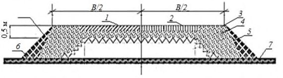
Рисунок 1 - Поперечный профиль насыпи с теплоизоляционным материалом на участках с грунтами IV и V категорий просадочности
1 - дорожная одежда; 2 - защитный (он же дренирующий) слой; 3 пенополистирол; 4 - насыпь; 5 - положение ВГММГ после сооружения насыпи; 6 - то же, до сооружения насыпи
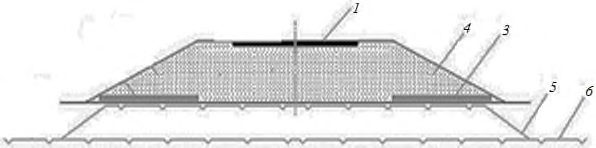
Рисунок 2 - Поперечный профиль насыпи с пенополистиролом на участках дорог грунтами IV и V категорий просадочности для сохранения грунта в мерзлом состоянии
1 - дорожная одежда; 2 - защитный (он же дренирующий) слой; 3 пенополистирол; 4 - насыпь; 5 - положение ВГММГ после сооружения насыпи; 6 - то же, до сооружения насыпи
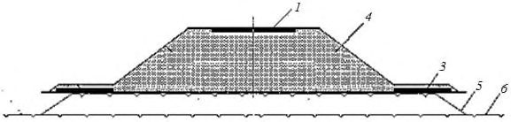
Рисунок 2 - Поперечный профиль насыпи с пенополистиролом на участках дорог грунтами IV и V категорий просадочности с целью снижения высоты бермы
1 - дорожная одежда; 2 - защитный (он же дренирующий) слой; 3 пенополистирол; 4 - насыпь; 5 - положение ВГММГ после сооружения насыпи; 6 - то же, до сооружения насыпи; 7 - берма; 8 - льдоминеральное ядро бугра пучения
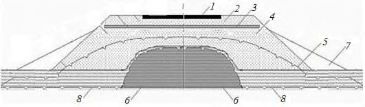
Рисунок 4 - Поперечный профиль насыпи с пенополистиролом на участках дорог грунтами IV и V категорий просадочности, распологаемые на плоскобугристых торфяниках высотой до 1 м, разделенных мочажинами
Рисунок 5 - Поперечный профиль насыпи с теплоизоляционным материалом -гранулированной пеностеклокерамикой совместно с нетканым геотекстилем при проектировании насыпей по 1-му принципу
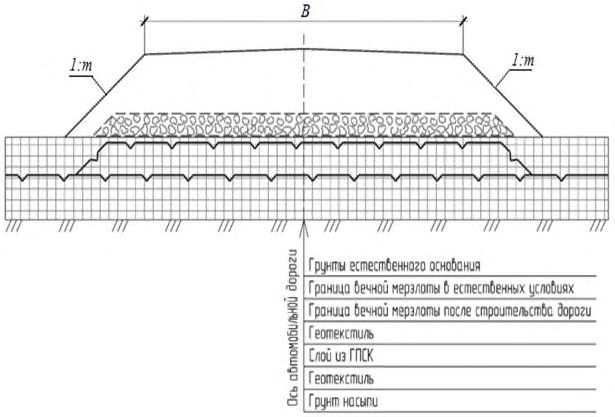
Рисунок 6 - Поперечный профиль насыпи с теплоизоляционным материалом из гранулированной пеностеклокерамикой на участках дорог со слабыми грунтами (например, торфяники) при сезонном промерзании грунтов
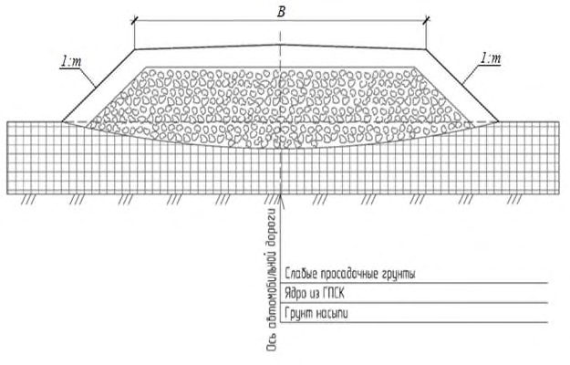
8.7Конструкции земляного полотна с использованием геотекстильных материалов
Геотекстильный материал располагают в основании, теле и верхней части насыпи в виде плоских прослоек, обойм и полуобойм. Принцип работы и назначение прослойки, тип конструктивного решения зависят от степени просадочности грунта основания и типа грунта насыпи, сезона производства работ, а также от особенностей структуры и свойств геотекстильного материала (приложение Ж).
При отсыпке насыпи в летний период прослойку располагают в основании (рисунок 7), чтобы уменьшить неравномерность осадки оттаивающего грунта основания и одновременно улучшить условия проезда построечного транспорта, отсыпки и уплотнения нижнего слоя земляного полотна. При отсыпке насыпи в зимнее время прослойку cледует предусматривать на границе между нижней частью из мерзлого комковатого (глинистого или торфяного) грунта и верхней частью из сухоили сыпучемерзлого песчаного грунта, чтобы предотвратить проникание сыпучего материала верхней части насыпи в поры комковатого грунта, уменьшить неравномерность осадки и отвести воду за пределы насыпи при оттаивании грунта в летний период.
Полотна располагают сплошь по всей ширине насыпи с поперечным уклоном 4 % и выпуском краев на откосы на 15-20 см.
1 - грунт насыпи; 2 - слой геотекстиля; 3 - мерзлый комковатый (глинистый или же, после постройки насыпи; 6 - мохорастительный покров
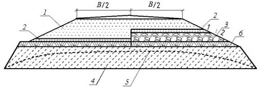
торфяной) грунт в нижней части насыпи; 4 - ВГММГ в естественных условиях, 5 - то Рисунок 7 - Поперечные профили насыпей с разделяющими геотекстильными прослойками
1 - одноосная георешетка; 2 - двухосная георешетка; 3 - противоэрозионная георешетка (геомат); 4 - ВГВМ в естественных условиях; 5 - ВГММГ после постройки насыпи
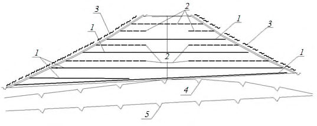
Рисунок 8 - Поперечные профили высоких насыпей на слабом оттаивающем склоне с прослойками из геосинтетических материалов
Таблица 2
| 𝑗 , град | 5 | 10 | 15 | 20 |
|---|---|---|---|---|
| l , м | 6,0 | 4,2 | 3,4 | 3,0 |
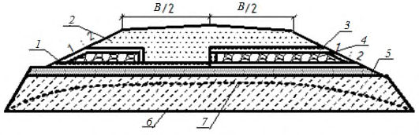
1 - грунт насыпи; 2 - полуобойма из геотекстиля; 3 - обойма из геотекстиля; 4 - грунт, в том числе твердомерзлый в нижней части насыпи; 5 - выравнивающий песчаный слой толщиной 0,2-0,3 м; 6 - ВГММГ в естественных условиях; 7 - то же, после постройки насыпи
Рисунок 9 - Поперечные профили насыпей с армирующими геотекстильными прослойками
Высота обоймы h об не должна превышать максимально допустимой величины, принимаемой в зависимости от модуля деформации геотекстильного материала Е (таблица 3).
Таблица 3
| Е о, Н/см | <100 | 100-150 | >150 |
|---|---|---|---|
| h об , см | 50 | 80 | 120 |
1 - грунт насыпи; 2 - геотехнические замкнутые обоймы; 3 - ВГММГ в естественных условиях; 4 - ВГММГ после постройки насыпи
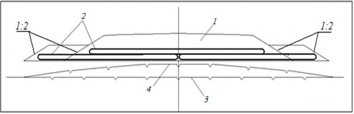
Рисунок 10 - Поперечные профили насыпей на слабых оттаивающих основаниях с двумя ярусами замкнутых геотехнических обойм
Толщину слоя заменяемого в выемках грунта принимают исходя из условия устойчивости и обеспечения требуемой прочности дорожной конструкции, но не менее 0,5 м. Крутизну откосов назначают расчетом, но не менее 1:3.
1 - слабый грунт; 2 - грунт тела насыпи; 3 - дорожное покрытие; 4 - тканое геополотно
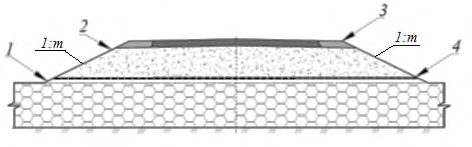
Рисунок 11 - Поперечный профиль насыпи на слабых грунтах и болотах I типа с применением тканого геополотна
1 - слабый грунт; 2 - грунт тела насыпи; 3 - дорожное покрытие; 4 - тканое геополотно
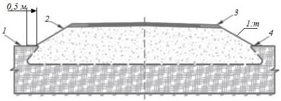
Рисунок 12 - Поперечный профиль насыпи на слабых грунтах и болотах II типа с применением тканого геополотна в виде полуобоймы
Если отсыпку насыпи предусматривают в зимний период на полную высоту из сухо- и твердомерзлых грунтов, то строительную осадку Sc , см, тела насыпи при оттаивании в теплый период года вычисляют по формуле
где ρ укл , ρ ст -плотность скелета мерзлого грунта в насыпи, г/см³ , соответственно после укладки с уплотнением и после оттаивания и стабилизации, определяется согласно ГОСТ 5180.
При зимней отсыпке высота насыпи должна быть более рабочей отметки на величину Sс .
СП 313.1325800.2017
Строительную осадку грунтов основания определяют исходя из типа местности, вида грунтов, наличия или отсутствия на поверхности земли мохорастительного покрова и его мощности, прогнозируемой глубины оттаивания при известной высоте насыпи согласно приложения Д.
Объем дополнительных земляных работ (вследствие строительной осадки грунтов основания) принимают равным произведению усредненной величины осадки на ширину насыпи по низу и на длину участка.
При отсутствии торфяного грунта можно предусматривать укладку сплошного слоя геотекстиля с обязательным закреплением полотнищ на обочинах и подошве насыпи или других геоматериалов (бровке выемки) и последующее устройство защитного (от солнечной радиации) слоя толщиной от 10 до 15 см из песка или гравийно-песчаной смеси (рисунок 14).
При необходимости можно укреплять сплошными геотекстильными слоями, выполняющими противоэрозионную или армирующую функцию, и обочины, и откосы. Противоэрозионную роль выполняют также боковые поверхности полуобойм и обойм из геотекстиля (рисунок 13).
1 - защитный песчаный слой толщиной 10-15 см; 2 - геотекстиль на откосе; 3 - грунт насыпи; 4 - геотекстиль на обочине
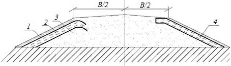
Рисунок 13 - Поперечный профиль насыпи с укреплением откосов и обочин геотекстилем
- в насыпях с возвышением бровки над расчетной отметкой поверхности наледи не менее чем на 0,5 м;
- в насыпях с бермой, устраиваемой с нагорной стороны;
- в комплексе с капитальными противоналедными сооружениями и устройствами.
8.8Дорожная одежда
При этом дорожная конструкция (земляное полотно в комплексе с дорожной одеждой) должна удовлетворять трем условиям:
Е общ -общий модуль упругости дорожной конструкции; где
Е тр -требуемый модуль упругости дорожной конструкции, определяемый в зависимости от расчетной нагрузки, состава и интенсивности перспективного движения;
𝑆𝑟 - наибольшее растягивающее напряжение при изгибе в материале рассматриваемого слоя одежды;
𝑅и - предельно допустимое растягивающее напряжение при изгибе в материале конструктивного слоя с учетом усталостных явлений;
Т а - наибольшее активное напряжение сдвига в грунте или слабо связном материале конструктивного слоя одежды, которое слагается из активных напряжений сдвига от временной нагрузки и веса вышележащих слоев;
Т доп - допустимое активное напряжение сдвига в грунте земляного полотна или в несвязном конструктивном слое дорожной одежды.
Требуемый общий модуль упругости дорожной конструкции Е общ вычисляют по формуле
где 𝐸𝑚𝑖𝑛 -минимальный требуемый общий модуль упругости конструкции, МПа;
K пр тр -требуемый коэффициент прочности дорожной одежды по критерию упругого прогиба, принимаемый в зависимости от требуемого уровня надежности.
Требуемый модуль упругости дорожной конструкции для условий ММГ вычисляют по формуле
где 𝐸 об вм - требуемый общий модуль упругости дорожной конструкции в условиях многолетней мерзлоты (ММ) с учетом длительности расчетного периода;
K пр тр - коэффициент, учитывающий длительность расчетного периода для районов с наличием ММГ.
Средние значения коэффициента Kд гр для трех дорожноклиматических подзон l ДКЗ - зоны ММ - приведены в таблице 4.
Таблица 4
| Грунты, тип местности по условиям увлажнения | l 1 - северная подзона | l 2 - центральная подзона | l 3 - южная подзона |
|---|---|---|---|
| Болота, 3-й тип - мокрые места | 1,60 | 1,40 | 1,60 |
| Заболоченные, 2-й тип - сырые места | 1,40 | 1,35 | 1,40 |
| Глинистые с ММГ, 2-й тип - сырые места | 1,25 | 1,20 | 1,30 |
| Глинистые с ММГ, 1-й тип - сухие места | 1,20 | 1,15 | 1,20 |
где 𝐸у - общий модуль упругости оттаявшего грунтового массива;
𝐸у о - расчетное значение модуля упругости грунта, определяемое при известной расчетной влажности.
𝐴у - комплексный коэффициент, учитывающий влияние мерзлого слоя в зависимости от глубины оттаивания (ее абсолютного значения Н от или относительной величины Н от / Д и неоднородное увлажнение земляного полотна и сезоннооттаивающего слоя по глубине, определяют в процессе экспериментальных работ или с использованием обобщенных данных, приведенных в таблице 5.
Таблица 5
| Относительная глубина оттаивания | Значения коэффициентов А у и А д для грунтов | Значения коэффициентов А у и А д для грунтов |
|---|---|---|
| Относительная глубина оттаивания | Супеси | Суглинки и глины |
| Н от / Д | А у | А у |
| Н от = 0 мерзлый грунт | > 5000 | >4000 |
| 0,125 | 354,1 | 292,2 |
| 0,25 | 83,5 | 67,0 |
| 0,5 | 17,8 | 15,0 |
| 1,0 | 3,4 | 2,46 |
| 1,5 | 1,28 | 0,85 |
| 2,1 | 0,67 | 0,42 |
| 2,5 | 0,50 | 0,36 |
| 3,0 | 0,44 | 0,32 |
| 3,3 | 0,43 | 0,34 |
| 3,5 | 0,44 | 0,37 |
| 4,0 | 0,45 | 0,39 |
СП 313.1325800.2017
| 4,5 | 0,48 | 0,42 |
|---|---|---|
| 4,8 | 0,50 | 0,45 |
| 5,0 | 0,50 | 0,48 |
| 6,0 | 0,57 | 0,52 |
| 10 | 0,65 | 0,63 |
| ∞- талый грунт | 0,99 |
8.9Водоотводные сооружения
1 - дерн, мох, торф; 2 - укрепление из сборных бетонных плит на слое теплоизоляционного материала пенопласта или местного мохоторфа (при его наличии); 3 - мощение нагорных мерзлотных валиков, приоткосных берм и водонепроницаемых замков с нагорными канавами; поперечных канав
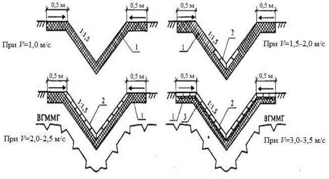
Рисунок 14 - Поперечные сечения водоотводных канав
В таких случаях для отвода воды на косогорных участках предусматривают бермы или нагорные валики (рисунок 15, а, б, в, г), а на равнинных участках -фильтрующие водоперепуски (дрены) по гидравлическому расчету. а - нагорный валик, б - мерзлотный валик с канавой; в - нагорная канава; г - нагорная канава с утеплителем 1 - смесь гравия с торфяной крошкой; 2 - сборные бетонные плиты; 3 - местный грунт;
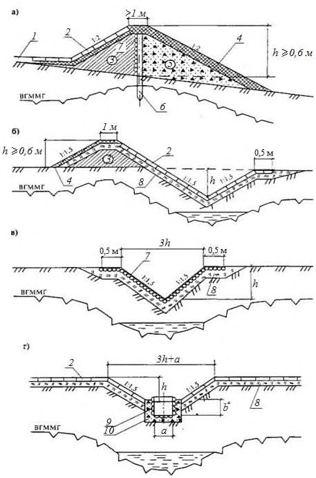
4 - одерновка; 5 - дренирующий грунт; 6 - жердевая стенка; 7 - жерди диаметром 10 см; 8 - мох, торф, пенопласт и другие теплоизоляционные материалы; 9 - деревянный лоток; 10 - щебень с грунтом
Рисунок 15 - Конструкции нагорных валиков и канав
9Искусственные сооружения
9.1Общие требования
Многоочковые трубы допускается проектировать с расположением очков в разных уровнях, размещая часть из них (как правило, одно) в уровне русла водотока, а остальные - на отметке выше уровня меженных вод. Количество рядом уложенных труб не ограничено.
- 1-й - обеспечить поднятие ВГММ до подошвы фундамента и сохранять его на этом уровне в течение всего периода эксплуатации сооружения;
- 2-й - допускается образование талой прослойки между подошвой фундамента и ВГММ;
- 3-й - использовать грунты основания в естественном талом состоянии.
Во всех случаях, когда это возможно, необходимо избегать устройства котлованов, приемных колодцев, глубоких бетонных, железобетонных и других экранов, различных врезов в мерзлых грунтах и предусматривать подготовку основания подсыпкой с ее планировкой.
Если не учитывать силы вертикально направленных касательных к боковым поверхностям надфундаментных частей трубы, возникает опасность отрыва звеньев и откосных стенок оголовков от их заанкерных фундаментов и подъема звеньев на величину пучения прилегающего к трубе грунта.
Для труб в тяжелых мерзлотно-грунтовых условиях (болота, сильнопучинистые грунты, вечная мерзлота) следует предусматривать мероприятия, направленные на повышение ремонтопригодности и приспособление трубы к ее нормальной эксплуатации при наличии деформаций звеньев и оголовков от воздействия морозного пучения грунтов и деградации вечной мерзлоты, а также от деформаций прилегающих участков насыпи.
9.2Водопропускные трубы и противоналедные сооружения
Размеры грунтовых подушек для бетонных и железобетонных труб принимают следующие: а) длина на 1-1,5 м более общей длины трубы с оголовками; б) ширина не менее 2 √𝐻р𝑑тр/2 + 1
для одноочковой трубы и не менее -очковой трубы где Н р - расчетная глубина оттаивания (промерзания) грунта под трубой, м; d тр -диаметр трубы, м; b тр -расстояние между трубами, м.
где Н г н - нормативная глубина сезонного оттаивания грунта, м; 𝑚𝑡 -коэффициент теплового влияния конструкций на грунт основания, принимаемый для фундамента: массивного бетонного - 0,8, свайного, с плитой на поверхности грунта - 1,0;
K𝑤 - поправочный коэффициент к нормативной глубине оттаивания грунта при его естественной влажности.
При ММГ оснований, используемых в оттаявшем состоянии, несущая способность которых менее, чем расчетное давление под подошвой фундамента трубы, следует предусматривать свайные или столбчатые фундаменты. При этом подошва ростверка должна быть заложена на том же уровне, как при фундаментах на естественном основании.
В остальных случаях предпочтительнее применять воротниковые оголовки, а при необходимости - портальные и раструбные с небольшим заглублением (не более 0,4-0,5 м) в грунты основания.
СП 313.1325800.2017
Тип укрепления подводящих и отводящих русел, сложенных просадочными грунтами, принимают в зависимости от их уклона: а) не более 1 % - бутовую кладку по слою теплоизоляции из мха, торфа толщиной не более 20 см в плотном состоянии; б) от 1 до 5 % - цементобетон (сборный или монолитный) по слою теплоизоляции из мха, торфа толщиной до 30 см в плотном состоянии; в) более 5 % - быстротоки по слою теплоизоляции в соответствии с требованиями поз. «б» .
- не более 1 % - в соответствии с поз. «а» 8.2.9;
- от 1 до 5 % - в соответствии с поз. «б» 8.2.9;
- более 5 % - бетонные, металлические или деревянные лотки на сваях, заглубляемых в вечномерзлый грунт по расчету на выпучивание.
На местности с уклоном более 1 % отводящие русла целесообразно укреплять по всей длине косогора, устраивая у его подножия гасители энергии водного потока.
- максимальное сохранение мохорастительного покрова на расстоянии не менее 20 м от концевых звеньев трубы и не менее 20 м в каждую сторону от нее;
- засыпка пазух в котлованах, подсыпка под фундаменты, устройство подготовок под крепления русел водонепроницаемыми глинистыми грунтами;
- устройство насыпей с уположенными откосами или бермами на расстоянии, равном четырехкратной высоте насыпи в каждую сторону от трубы;
- устройство на откосах насыпи каменной наброски толщиной от 1 до 1,5 м выше уровня верха трубы на 1 м или торфяной изоляции толщиной не менее 1м до уровня верха трубы, протяженность которых вдоль дороги равна четырем диаметрам трубы в каждую сторону от ее оси или оси крайних звеньев для многоочковых труб;
- обеспечение общего фундамента звеньев многоочковых труб.
- размещение откосных крыльев оголовков и оголовочной секции на общем фундаменте, т. е. когда они представляют собой общее целое;
- засыпка понижений в районе трубы глинистым грунтом в виде бермы высотой от 0,2 до 0,3 м с уклоном ее верха от 2 до 4% в сторону русла водотока с целью предотвратить застой воды и увеличить скорость ее протекания вдоль подошвы насыпи;
- обеспечение в условиях большой снегозаносимости (когда отверстие трубы полностью занесено снегом) проветривания труб в зимний период с помощью вентиляционных труб, концы которых выводят за пределы снежных отложений, или других устройств.
- преимущественно мосты вместо труб;
- мосты с увеличенными отверстиями, преимущественно свайноэстакадного типа на всю ширину наледного лога;
- мосты и трубы совместно с утепленными лотками;
- мосты со спрямленными и углубленными руслами, обеспечивающими пропуск наледной воды через зону искусственного сооружения.
где Н
∆ H - расчетная максимальная мощность наледи, м, требования к которой приведены в [26];
∆h - превышение, необходимое для пропуска по наледи расчетного расхода талых вод, м;
∆ h пр - просвет от уровня воды до низа пролетного строения, м.
- трубы со специальными конструкциями фундаментов;
- свайно-эстакадные мосты, полностью перекрывающие наледный лог;
- мосты с любыми конструкциями фундаментов и опор, но с повышенными подмостовыми габаритами;
- мосты или трубы совместно с дренажно-каптажными устройствами.
СП 313.1325800.2017 гидрологические условия (устройство теплоизолирующих подушек, накопление снега, углубление русел и т. д.).
9.3Пересечения автомобильных дорог с горячими газои нефтепроводами
СП 313.1325800.2017
На участке пересечения проводят демонтаж плит покрытия и разрабатывают бульдозером с предварительным рыхлением грунта поперечную траншею в насыпи на необходимую ширину. В дальнейшем работы выполняют по изложенной выше технологии.
10Строительство автомобильных дорог
10.1Общие требования
- довести земляное полотно, отсыпанное в зимний период, до требуемых параметров путем уплотнения тела насыпи, планировки откосов, укрепительных работ;
- заготовить грунт для работ в зимний период;
- выполнить укрепительные и отделочные работы на искусственных сооружениях;
- устроить дорожное основание и покрытие;
- организовать производство асфальтобетонных и цементобетонных смесей в необходимом объеме.
- построить автозимники, возвести временные здания и сооружения, расчистить дорожную полосу и подготовить карьеры дорожностроительных материалов, в том числе грунтовые, для разработки грунта зимой и в следующий летний период;
- доставить на объекты машины, механизмы, строительные и горюче-смазочные материалы;
- произвести буровзрывные работы на участках с мерзлыми грунтами, которые при оттаивании переходят в текучее состояние;
- соорудить временные землевозные дороги между карьерами и трассой, возвести насыпи из скальных, а также несмерзающихся галечногравийных и песчаных грунтов на подходах к мостам, на марях, болотах и других участках со слабыми основаниями; отсыпать бермы и утеплить откосы;
- заготовить, переработать и вывезти каменные материалы на трассу и заводы [асбестоцементный завод (АБЗ), цементобетонный завод (ЦБЗ)];
- устроить щебеночное (гравийное) основание;
- уложить сборные железобетонные плиты.
На тех участках, где земляное полотно запроектировано по 1-му принципу, лес, кустарник, бугры пучения удаляют только в зимний период на ширину основания насыпи, при этом сохраняют снежные отложения толщиной не более 20 см. Запрещается корчевать пни на просеке.
Не допускается устройство просеки «в задел». Мохорастительный покров в основании насыпи и в пределах охранной зоны, границы которой устанавливают при проектировании (ориентировочно не более 100 м в обе стороны от оси трассы), должен быть сохранен.
Проезд дорожных машин и технологического транспорта по просеке разрешается только в зимний период.
Грунты боковых резервов допускается использовать при влажности, близкой к оптимальной.
СП 313.1325800.2017 мохорастительный слой удаляют на всю ширину дорожной полосы бульдозером в поперечном направлении в обе стороны от оси дороги.
При обследовании определяют:
- места укладки снега, удаляемого с поверхности резервов и карьеров;
- состояние водоотводных канав;
- влажность грунтов в резервах и при необходимости в карьерах.
10.2Земляное полотно и укрепление откосов
СП 313.1325800.2017 одну или две стадии: часть отсыпают зимой на промерзшее основание (1-я стадия) и затем доводят до проектной отметки летом (2-я стадия).
Сроки 2-й стадии определяют исходя из условия сохранения грунта под насыпью в мерзлом состоянии.
- 1-й слой отсыпают способом «от себя» с одновременным устройством дренажной присыпки и разравниванием грунта бульдозером;
- присыпку из мохоторфяного грунта наращивают послойно с одновременной отсыпкой и разравниванием грунта в насыпи и мохоторфяного грунта в присыпке.
СП 313.1325800.2017
- при верхнем пределе допустимой влажности - в весенний период слоями толщиной от 15 до 20 см по мере их оттаивания;
- влажности от верхнего до нижнего пределов - в летний период слоями по мере их просыхания.
При производстве работ необходимо рационально сочетать указанные способы, обеспечивая первоочередное возведение земляного полотна на участках с боле высокой влажностью.
- разрабатывают резервы, начиная с их низовой стороны;
- разравнивают грунт ежедневно после его перемещения в насыпь с приданием поверхности уклона от 3 ‰ до 5 ‰ от оси к бровкам;
- планируют дно и откосы резервов, а также разравнивают валы мохорастительного покрова сразу же после окончания земляных работ;
- послойно уплотняют грунт специальными средствами с соблюдением требуемых норм плотности.
СП 313.1325800.2017 отвал или кавальеры для последующей погрузки экскаваторами в транспортные средства.
В таблице 6 приведены условия использования мерзлых грунтов и способы их разработки.
Таблица 6
| Разновидность мерзлого песчаного грунта | Условия разработки грунта землеройными | Содержание мерзлых комьев крупнее 25 см при разработке | Условия применения | Минимальный коэффициент уплотнения | Минимальный коэффициент уплотнения | Относительная осадка при оттаивании в насыпи, доли |
|---|---|---|---|---|---|---|
| машинами | грунта,% | в мерзлом состоянии | после оттаивания | единицы | ||
| Сыпучемерзлый | Без рыхления | 0 | Без ограничений по технологическим правилам, установленным для талых | 0,95 | 0,95 | 0 |
| Сухо-мерзлый | То же | <50 | грунтов Размер мерзлых комьев не должен превышать 30 см. Послойное уплотнение решетчатыми или | 0,92 | 0,95 | <0,05 |
| Твердомерзлый | С предварительным рыхлением взрывным или механизированным способом | 50-80 | вибрационными катками В смеси с сыпуче-мерзлым грунтом - в нижней части насыпи; содержание мерзлых комьев размером до 30 см не более 50 %. Послойное уплотнение решетчатыми или вибрационными катками | 0,87 | 0,95 | <0,12 |
| Пластично- мерзлый | То же | >80 | Только для заготовки в бурты с последующим оттаиванием и просушкой | Не нормируется | Не нормируется | Не нормируется |
СП 313.1325800.2017
- удалить бульдозером снег с дорожной полосы;
- заготовленный заблаговременно и просушенный в карьере торф доставить транспортными средствами к месту работ, уложить слоем толщиной от 0,4 до 0,5 м (в рыхлом состоянии) и разровнять бульдозером повышенной проходимости, одновременно уплотняя;
- отсыпать насыпь из минерального грунта: первый слой -способом «от себя», последующие - продольным способом.
- удаляют бульдозером снег с дорожной полосы;
- отсыпают из песка выравнивающий слой толщиной не более 0,3 м (в зависимости от неровностей на поверхности), с помощью бульдозера или автогрейдера; укладывают теплоизолирующие плиты на проектную ширину стыками вразбежку, под откосной частью - в два слоя;
- отсыпают 1-й слой насыпи толщиной от 0,5 до 0,6 м из песка способом «от себя», надвигая грунт бульдозером сначала на крайние плиты, затем на средние, не допуская попадания на них крупных комьев мерзлого грунта;
- доводят насыпь до проектной отметки продольным способом.
СП 313.1325800.2017 транспорта и дорожных машин. В местах расположения бугров по ходу работ следует закрепить на них выноски и отметить их в попикетной ведомости. До начала оттепели над буграми необходимо уложить теплоизолирующий слой и отсыпать насыпь. При использовании глинистых грунтов работы производят аналогично, соблюдая требования по выполнению земляных работ в зимний период.
- после промерзания торфа в мочажинах на глубину не менее 30 см (что позволяет обеспечить проезд машин) удаляют снег с дорожной полосы бульдозером;
- доставляют торф автомобильным транспортом и отсыпают в пределах ширины насыпи по низу, после чего бульдозером перемещают в мочажины способом «от себя»;
- отсыпают минеральный грунт насыпи после полного промерзания ранее уложенного слоя торфа в мочажинах, для ускорения которого систематически удаляют выпадающий снег.
- расчищают дорожную полосу от снега бульдозером, обеспечивая тем самым быстрое промораживание торфа в мочажинах на глубину от 0,3 до 0,4 м;
- рыхлят и удаляют мерзлый грунт бугра пучения бульдозеромрыхлителем на глубину залегания торфа в примыкающих мочажинах;
- разрабатывают торф в карьере экскаватором с погрузкой в автомобили-самосвалы, доставляют к месту укладки;
- засыпают торф в котлован, разравнивают и уплотняют бульдозером (с запасом на осадку);
- планируют поверхность торфяной засыпки с приданием двускатного профиля в сторону откосов;
СП 313.1325800.2017
- систематически расчищают снег для ускорения естественного промораживания торфа;
- сооружают насыпь из дренирующего грунта после промерзания торфа в котловане.
В зимний период геотекстиль следует укладывать после промерзания грунта основания на глубину от 30 до 40 см. Снежный покров толщиной более 20 см должен быть удален с основания насыпи.
Если предусматривают укладку геотекстиля на ранее отсыпанный слой земляного полотна, то его поверхность должна быть спланирована с поперечным yклоном 4 ‰.
Геотекстильный материал засыпают способом «от себя» слоем грунта, минимальную толщину которого определяют по т а б л и ц е 7 , а последующие слои - продольной возкой грунта.
Таблица 7
| Положение прослойки | Минимальная ширина нахлеста, см | Минимальная толщина засыпки, см |
|---|---|---|
| В теле насыпи | 30 | 40 |
| В обойме или полуобойме | 30 | 40-50 |
| Под сборным покрытием или под гравийным слоем | 10 | - |
| На откосе | 20 | 10-15 |
СП 313.1325800.2017 значительным деформациям в процессе строительства и эксплуатации, то полотна скрепляют сваркой, склеиванием или скобами. При выборе способа скрепления следует учитывать возможность изменения свойств геотекстильного материала в зоне стыка. Так, при сварке ухудшается водопроницаемость полотна, поэтому такой способ не годится для соединения полотен, выполняющих дренажную функцию, например под сборным цементобетонным покрытием.
Аналогичным образом отражается на свойствах материала склейка полотен разогретым битумом или полимерным клеем. При склейке особое внимание следует обращать на прочность шва в случае соединения мокрых полотен.
Соединение сшивкой делают с помощью портативных швейных машин.
- в осенний период бульдозером повышенной проходимости удаляют мохорастительный покров на ширину насыпи понизу;
- при установлении устойчивых отрицательных температур воздуха систематически расчищают дорожную полосу от снега бульдозером, обеспечивая промерзание грунта основания на глубину не менее 1,0 м;
- доставляют глинистый грунт самосвалами, отсыпают продольным способом, разравнивают слоем расчетной толщины, уплотняют катком на пневматических шинах; таким образом устраивают все слои глинистой части насыпи с их промораживанием;
- торф доставляют из карьера и отсыпают вначале на откосные части насыпи с надвижкой его бульдозером;
- затем торфом закрывают поверхность глинистого грунта, отсыпая слоями по 25-30 см с уплотнением и промораживанием каждого;
- отсыпают верхнюю часть насыпи из сыпучего и сухомерзлого песка.
- подготовительные работы;
- намораживание торфяной плиты;
- отсыпка насыпи из минеральных грунтов.
- проминку поверхности болот гусеничными машинами повышенной проходимости;
- расчистку дорожной полосы от снега, древесной и кустарниковой растительности бульдозерами;
- систематическую очистку полосы от выпадающего снега в период промораживания торфяного основания на заданную глубину.
- на 1-м (осенне-зимний период) - выполняют подготовительные работы и намораживают торфяную плиту
- на 2-м (предвесенний период) - отсыпают земляное полотно из минеральных грунтов на часть высоты и устраивают теплоизолирующие призмы из торфа;
- на 3-м (летний период) -досыпают земляное полотно из минеральных грунтов до проектной высоты.
Торф в валах выдерживают 2-3 сут, пока не снизится его влажность. Затем вал разравнивают, перемещая торф под углом к оси дороги.
Торф уплотняют гусеничными тракторами за пять-шесть проходов по одному следу до плотности скелета торфа в насыпи не менее 0,16 г/см3.
СП 313.1325800.2017
2-му слою торфяной плиты придают серповидный профиль и дополнительно уплотняют поперечными проходами трактора по откосам и телу плиты.
Торф разгружают, распределяя равномерно на всю ширину плиты, разравнивают бульдозером слоями по 0,5-0,6 м и уплотняют гусеничным трактором.
Каждый последующий слой торфяной плиты устраивают после полного промерзания предыдущего. Последнему слою придают серповидный профиль.
Укрепление обочин производят гравийно-песчаным или щебенистым материалом.
Канавы устраивают:
- весной (по мере оттаивания грунта) -экскаваторамидраглайнами, с обратной лопатой, канавокопателями и бульдозерами;
- летом или осенью (в период максимального оттаивания грунтов) -сразу на полный профиль экскаваторами, канавокопателями и бульдозерами;
- зимой - взрывным способом.
- грунт доставляют автомобильным транспортом, планируют и уплотняют бульдозерами;
- откосы планируют навесным тракторным планировщиком;
- вдоль подошвы откосов укладывают теплоизоляционный материал и распределяют его на откосы бульдозерами.
10.3Дорожная одежда
10.3.1Строительство дорожных одежд необходимо осуществлять в соответствии с требованиями СП 78.13330 и настоящего свода правил.
СП 313.1325800.2017
СП 313.1325800.2017
- очистки поверхности покрытия от пыли и грязи и удаления выступающей над ней арматуры;
- исправления неровностей сборного покрытия асфальтобетонной смесью с предварительной подгрунтовкой поверхности жидким битумом или битумной эмульсией либо перекладкой плит при высоте уступов более 5 см;
- подгрунтовки всей поверхности сборного покрытия жидким битумом или битумной эмульсией;
- укладки в местах расположения поперечных швов, сборного покрытия полос шириной от 0,75 до 1,0 м из геотекстиля или сетки из стекловолокна.
На участках 2-го типа местности дорожные одежды низшего, переходного и облегченного типов можно устраивать в год завершения земляных работ, а с асфальто- и цементобетонными покрытиями - через год эксплуатации дороги с учетом величины допустимой осадки (приложение Д).
На участках 3-го типа местности дорожные одежды переходного и облегченного типов допускается устраивать через год после сооружения насыпи, а с асфальто- и цементобетонными покрытиями - через 2 года.
На всех типах местности по согласованию с заказчиком и при технико-экономическом обосновании дорожную одежду можно устраивать в две стадии.
На насыпях, устроенных гидромеханизированным способом, все типы оснований и покрытий можно устраивать сразу после отсыпки земляного полотна до проектных отметок.
10.4Водопропускные трубы
- строительную площадку организовывать с низовой стороны искусственного сооружения на расстоянии не менее 70 м от него;
- не допускать пересечения трассы построечными дорогами на расстоянии менее 50 м от оси сооружения;
- подъезды к местам строительства сооружения и стоянок механизмов устраивать на грунтовых подсыпках толщиной не менее 0,5 м.
При производстве работ в летнее время необходимо:
- располагать строительную площадку в соответствии с требованиями 10.4.2;
- отсыпать грунтовые площадки толщиной не менее 0,5 м под места стоянок механизмов и располагать их на расстоянии не менее 50 м от оси трубы;
- строить временные искусственные сооружения (деревянные, из металлических труб) для пропуска поверхностных вод.
Подготовленную скважину закрывают щитом для предотвращения попадания в нее атмосферных осадков, грунта и случайных предметов.
СП 313.1325800.2017
Сваи устанавливают в скважины не позднее чем через 3 сут после окончания бурения.
В зимнее время поверхность блоков перед заполнением швов необходимо прогревать горячим воздухом.
В зимний период укладываемую смесь защищают от охлаждения и замерзания тепляками, обогреваемыми горячим воздухом, электричеством или паром.
Монтаж металлических гофрированных труб и устройство дополнительного защитного покрытия должны быть выполнены в соответствии с требованиями [23].
Для того чтобы повысить несущую способность гофрированной трубы и надежность ее работы, рекомендуется до засыпки придать ее поперечному сечению овальность с большей осью по вертикали, увеличив вертикальный диаметр до 3 % номинального, путем закрепления сечения стойками или путем устройства жесткого слоя засыпки.
10.5Разработка карьеров
- бульдозерами послойно по мере радиационного оттаивания с перемещением в бурты и последующей погрузкой экскаваторами в транспортные средства;
- прямой экскавацией и погрузкой в транспортные средства.
Первым способом следует разрабатывать сухо- и твердомерзлые грунты, 2-м - сыпучемерзлые. Экскавацию грунта из буртов осуществляют в летнее время или зимой после просушивания.
СП 313.1325800.2017 для радиационного оттаивания и послойной срезки грунта с перемещением в бурты.
В карьерах, которые требуется разрабатывать на максимальную глубину в течение одного летнего сезона, оттаявшие слои необходимо удалять ежедневно, но не реже чем через 3 сут.
Промежуточные валы из оттаявшего грунта возводят высотой не более 2,5 м, шириной по низу не более 6 м и выдерживают для просушивания в зависимости от вида грунта:
- песка средней крупности - 1-2 сут;
- пылеватого песка с содержанием пылеватых и глинистых частиц не более 5 % - 4-5 сут, от 5% до 13% - 6-7 сут;
- супеси - 10-12 сут.
Предварительно подсушенные пылеватые пески с содержанием пылеватых и глинистых частиц от 5 % до 13 % и супеси в дальнейшем укладывают в накопительные бурты тонкими слоями (не более 0,5 м) для последующего просыхания. Укладку осуществляют бульдозерами способом надвижки или экскаваторами.
СП 313.1325800.2017 сезонного промерзания, и защищать теплоизолирующими покрытиями из местных (мох, торф, снег и др.) и искусственных (полимерные или водновоздушные замерзающие пены) материалов.
- снег с поверхности удалять из расчета освобождения площади грунта, которую экскаваторы могут разработать за одну смену, а в сильные морозы - за половину смены;
- передвижение транспортных средств осуществлять по дну разрабатываемого карьера;
- разработку буртов и карьеров, расположенных на склоне, начинать с низовой стороны.
10.6Контроль, приемка и оценка качества работ
- сохранность мохорастительного покрова в основании насыпей и в пределах охранной зоны;
- соблюдение сроков выполнения подготовительных и основных работ;
- глубину промерзания (оттаивания) грунтов основания и отсыпаемых слоев насыпи;
- толщину теплоизолирующих слоев, отсыпаемых на всех конструктивных элементах (в нижней части, на откосах и на поверхности глинистого грунта, уложенного в нижней части насыпи);
- требуемую плотность при послойном уплотнении грунтов;
- качество стыковки полотен геотекстильного материала.
11Охрана окружающей среды
11.1Общие требования
К организационным мероприятиям относятся:
- обучение рабочих и служащих основным правилам ведения работ в условиях неустойчивых природных ландшафтов и экологических систем с
СП 313.1325800.2017 разъяснением возможных экономических и социальных последствий их разрушения при строительстве;
- оборудование рабочих площадок средствами наглядной агитации, разъясняющими необходимость и пути повышения культуры производства работ при строительстве автомобильных дорог в районах вечной мерзлоты;
- разработка соответствующих разделов по рациональному природопользованию в проектах производства работ.
- К конструктивным мероприятиям относятся:
- выбор и назначение конструкций земляного полотна, вызывающих минимальные изменения сложившихся мерзлотно-грунтовых и гидрологических условий на территории строительства;
- применение конструктивных элементов земляного полотна, выполняемых из материалов, обладающих свойствами, позволяющими управлять мерзлотными и гидрологическими процессами в грунтах оснований и на окружающей территории. К ним относятся скальные, торфяные или глинистые грунты и другие материалы, используемые в виде покрытий откосов или прослоек разной толщины в теле насыпи;
- уменьшение размеров водоводов, включая замену продольного водоотвода поперечным, на участках пересечения марей и замерзлоченных склонов, размещение продольного водоотвода на расстоянии не ближе 5 м от подошвы откосов.
К технологическим мероприятиям относятся:
- регламентация сроков, состава, последовательности и режимов выполнения подготовительных и основных работ с учетом сезонной изменчивости несущей способности грунтов;
- устройство и текущее содержание технологических, в том числе притрассовых автодорог, проездов от трубопроводов (при гидромеханизированном способе сооружения земляного полотна);
- комбинирование различных технологий сооружения земляного полотна, в том числе гидромеханизированного, буровзрывного и «сухого» способов производства земляных работ с целью сокращения общей площади отвода территории под карьеры и технологические дороги;
- рекультивация и мелиорация карьеров и территорий отвода, укрепление откосов земляного полотна.
11.2Природоохранные мероприятия при проектировании автомобильных дорог
- сохранение природных ландшафтов, территорий для которых установлен режим особой охраны (особо охраняемые природные территории, ООПТ);
- максимальную экономию земельных ресурсов, отводимых для размещения автомобильных дорог;
- защиту атмосферного воздуха от выбросов загрязняющих веществ;
- защиту от шума и вибраций населенных мест, расположенных в районе проектирования;
- предотвращение загрязнения бассейнов поверхностных водных объектов и подземных вод жидкими и твердыми отходами, а также попадания в поверхностные и подземные воды загрязненных стоков;
- условия безопасного обращения с отходами;
- защиту растительного и животного мира.
11.3Природоохранные мероприятия при строительстве автомобильных дорог
- с выходами на поверхность земли скальных и крупнообломочных пород;
- на дренированных ровных участках; на возвышенных участках местности и относительно пологих склонах, сложенных малопросадочными грунтами.
- рубка древесно-кустарниковой растительности;
- нарушение мохорастительного покрова;
- проезд автомобильного транспорта.
Для отпугивания животных от дороги в ночное время следует применять специальные приспособления (катафоты и т. п.).
АПриложение А. Категории сложности инженерно-геологических и инженерногеокриологических условий
А.1 Требования к категориям сложности инженерно-геологических и инженерно-геокриологических условий приведены в [14].
БПриложение Б. Расчет насыпи на устойчивость
Б.1 Устойчивость насыпи обеспечивается ее высотой, при которой ВГММГ будет сохраняться в критический по балансу тепла год не более одного раза в 11 лет на требуемой (допустимой) глубине и осадка насыпи при этом в оттаявшие грунты основания не будет превосходить допустимой величины.
На рисунке Б.1 приведена блок-схема расчета насыпи на устойчивость.
Б.2 Ориентировочные значения допустимой осадки S доп , см, для дорожных одежд:
- капитального типа с цементобетонным покрытием - 2;
- с асфальтобетонным покрытием - 4;
- со сборным цементобетонным покрытием - 10;
- облегченного типа с усовершенствованным покрытием - 6;
- переходного типа - 10;
- низшего типа - 15.
Б.3 При проектировании насыпи по 1-му принципу осадка в процессе эксплуатации дороги не допускается. В этом случае
где Н - высота насыпи, м;
Н к -глубина сезонного оттаивания конструкции, включающей земляное полотно и дорожную одежду, м.
Б.4 Для конструкции насыпи, состоящей из двух или трех слоев с резко отличающимися теплофизическими характеристиками, глубину сезонного оттаивания каждого слоя рассчитывают по формулам: верхнего (дорожная одежда)
нижнего (материал основания или грунт земляного полотна)
нижнего (грунт земляного полотна или основания)
где Н с1 , Н с2 , Н с3 - глубина сезонного оттаивания соответственно верхнего и нижних слоев, м;
Н н - нормативная глубина сезонного оттаивания 1-го, 2-го и 3-го слоев, определяемая по СП 25.13330;
К w - поправочный коэффициент на расчетную влажность материала дорожной, одежды и грунта насыпи, принимается по графикам на картах (рисунки Б.2, Б.3);
Кп -коэффициент, учитывающий интенсивность оттаивания материала дорожной одежды; принимают для песка - 1,0, крупного чистого песка - 1,05, песка с гравием - 1,13, гравия и гальки - 1,21, щебня и дресвы 1,25, асфальтобетона - 1,30, цементобетона - 1,37.
Б.5 Влажность слоев дорожной одежды и грунта насыпи при определении значения Кw в расчетах принимают близкой к оптимальной, %:
| цементобетонное покрытие | 2 |
|---|---|
| асфальтобетонное покрытие | 1 |
| основание под покрытие: песчаное | 6 |
| щебеночное | 4 |
| из гравийно-галечникового и щебенистого грунта | 5 |
| из песка: мелкого и среднего | 8 |
| пылеватого | 10 |
| из супеси | 12 |
| из суглинка | 15 |
| из глины | 20 |
Рисунок Б.1 - Блок-схема расчета насыпи на устойчивость
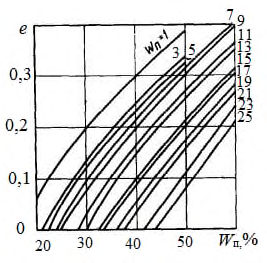
С учетом формул (Б.2)-(Б.4) глубину сезонного оттаивания конструкции насыпи определяют по методу эквивалентных слоев: при двух слоях:
при трех слоях:
Б.6 При проектировании насыпи по 2-му принципу высоту насыпи вычисляют по формуле
где Н д.с -мощность деятельного (сезоннооттаивающего) слоя, устанавливаемая по данным изысканий или расчетом по формулам (Б.4)(Б.6) при естественной влажности грунта, м; е - относительная осадка грунта основания после его оттаивания под нагрузкой доли единицы, определяемая согласно СП 25.13330;
S с -строительная осадка, зависящая от сезона производства земляных работ, м, определяется согласно приложению В.
1 - крупный песок; 2 - средний песок; 3 - мелкий и пылеватый песок
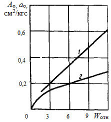
Рисунок Б.2 - Относительная осадка песчаных грунтов при оттаивании под нагрузкой 0,075 МПа
При наличии в основании насыпи глинистых грунтов с крупнообломочными включениями относительную осадку, определенную по графикам, корректируют с помощью коэффициента (таблица Б.1).
При сливающейся мерзлоте расчетную относительную осадку при оттаивании под насыпью органических грунтов принимают: для торфяных грунтов: лесотопяная залежь……………………………………………….0,40; топяная залежь…………………………………………………….0,45; ненарушенного мохо-торфяного покрова, включая почвенный слой…………………………………………………………………………0,30; теплоизолирующих слоев из торфа и мха………………………0,35.
Таблица Б.1
| Наименование грунтов | Коэффициент, учитывающий содержание крупных фракций,% | Коэффициент, учитывающий содержание крупных фракций,% |
|---|---|---|
| 25-35 | 35-50 | |
| Супесь: легкая | 1,0 | 0,5 |
| тяжелая пылеватая | 0,8 | 0,6 |
| Суглинок: легкий | 0,8 | 0,6 |
| тяжелый | 0,8 | 0,55 |
| Глина | 0,8 | 0,55 |
Б.7 Если предусмотрено предварительное оттаивание и осушение грунтов основания, то высоту насыпи вычисляют по формуле
где Н т.е - глубина предварительного оттаивания грунтов основания до возведения земляного полотна, м;
S 1 - осадка грунтов основания после предварительного оттаивания под действием собственного веса, м;
где Ао - коэффициент оттаивания грунтов; определяют экспериментально или принимают по Б.7; ао -коэффициент уплотнения грунтов основания, см² /кгс; определяют экспериментально или принимают по таблице Б. 2 настоящего приложения; γт - плотность талого грунта, кг/см³ .
Таблица Б.2
| Грунт | А о | а о, см² /кгс |
|---|---|---|
| Глина, суглинок тяжелый пылеватый | 0,05-0,08 | 0,07-0,12 |
| Суглинок легкий, легкий пылеватый | 0,03-0,05 | 0,06-,09 |
| Суглинок с включением гравия | 0,01-,03 | 0,03-0,05 |
| Супесь пылеватая, легкая | 0,02-0,04 | 0,04-0,06 |
| Песок пылеватый | 0,01-0,02 | 0,02-0,03 |
Значения коэффициентов А о и а о для торфов определяют по рисунку Б.8.
Рисунок Б.3 - Зависимость коэффициента уплотнения а о (1) и оттаивания А о (2) от влажности торфа W отн
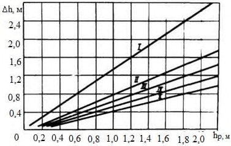
Б.8 При использовании геотекстиля в конструкциях насыпей их высоту, полученную по формулам (Б.1), (Б.7), умножают на коэффициент
К ст = 0,88, учитывающий охлаждающее влияние геотекстильной прослойки на глубину оттаивания принятой конструкции насыпи.
Б.9 Высоту насыпей Н , м, проектируемых с теплоизолирующим слоем из искусственных материалов в основании, вычисляют по формуле
где Н н - нормативная глубина сезонного оттаивания грунта насыпи, м; определяется по СП 25.13330. h - толщина теплоизолирующего слоя, м; 𝜆 , 𝜆 Г, -коэффициенты теплопроводности соответственно теплоизоляционного материала и грунта насыпи, Вт/(м К) определяют по СП 25.13330;
С , СГ - удельная теплоемкость соответственно теплоизоляционного материала и грунта насыпи, Дж/(кг К), определяемая согласно СП 25.13330;
1,5 - коэффициент, м.
Пример 1. Автомобильную дорогу в районе пос. Ямбург ( l 1 дорожно-климатическая подзона) проектируют по 1-му принципу. Грунт в основании насыпи - тяжелый суглинок влажностью 40 % и с числом пластичности J п = 17. Предусмотрено возведение насыпи из мелкозернистого песка. Покрытие дороги - сборное из железобетонных плит типа ПАГ-14 толщиной 14 см, укладываемых на укрепленное цементом песчаное основание толщиной 16 см. Требуется определить высоту насыпи.
Расчет ведут по формуле (Б.1).
Поскольку насыпь состоит из трех слоев, то определяют глубину оттаивания каждого слоя:
- верхнего (покрытие) - по формуле (Б.2), где Н н с1 = 2,6 м (по рисунку Б.2); поправочный коэффициент на влажность (2 %) К w = 1,1; Кп = 1,37:
- нижнего (укрепленное песчаное основание) - по формуле (Б.3), где Н н с2 = 2,6 м (по рисунку Б.2); поправочный коэффициент на влажность (6 %) Кw = 0,98:
- нижнего (мелкозернистый песок насыпи) - по формуле (Б.4), где Н н с3 = 2,4 м (по рисунку Б.4); поправочный коэффициент на влажность (8 %) песчаного грунта, подстилаемого глинистым, Кw = 0,92:
По формуле (Б.6) для трехслойной конструкции
Если учесть, что толщина дорожной одежды - 0,3 м, то земляное полотно следует отсыпать на высоту
Пример 2. Исходные данные те же, что и в примере 1.
Насыпь проектируют по 2-му принципу с прослойкой геотекстиля в нижней части. Насыпь возводят в летний период. Требуется определить высоту насыпи.
Расчет ведут по формуле (Б.7).
Показатель Н к = 2,28 м. Так как нет данных изысканий, определяют мощность деятельного (сезоннооттаивающего) слоя Н н с1=1,8 м, поправочный коэффициент на влажность (40 %) К w = 0,85; получаем: Н д.с = 1,8 0,85=1,53 м.
Допустимая осадка сборного цементобетонного покрытия (Б.2) S доп = 0,02 м. Относительная осадка при оттаивании глинистых грунтов основания при W = 40 % и J п = 17 по графику (рисунок Б.2) е = 0,07.
Строительная осадка согласно расчетам по формуле (Б.7) составляет S c = 0,12 м.
Тогда высоту насыпи H , м, вычисляют следующим образом:
Высоту насыпи с учетом слоя геотекстиля H , м, вычисляют следующим образом:
Если учесть, что толщина дорожной одежды 0,3 м, то земляное полотно следует отсыпать на высоту
Пример 3. Автомобильную дорогу в районе г. Салехарда проектируют с асфальтобетонным покрытием. По данным изысканий, супесчаный грунт основания имеет влажность 18 %, а, по данным лабораторных испытаний, W т = 19%, g т = 1,6 т/м³ .
После снятия мохорастительного покрова с дорожной полосы и устройства водоотводных канав за год до начала основных работ влажность супесчаного грунта основания в результате осушения снизилась до 16 %.
Дорожная одежда включает двухслойный асфальтобетон толщиной 10 см на щебеночном основании толщиной 15 см, подстилаемом слоем гравийно-песчаной смеси толщиной 15 см. Земляное полотно предусмотрено отсыпать из крупнозернистого песка. Требуется определить высоту насыпи, которую вычисляют по формуле (Б.8).
Поскольку насыпь состоит из трех слоев, то определяют глубину оттаивания каждого слоя:
- верхнего (покрытие) - по формуле (Б.2), где Н н с1 = 3 м (по рисунку Б.1), поправочный коэффициент на влажность (1 %) K w = 1,1; Kп = 1,30:
- нижнего (основание) - по формуле (Б.3), где Н н с2 = 3м (по рисунку Б. 2), поправочный коэффициент на влажность (5 %) K w = 0,98:
- нижнего (грунт земляного полотна) -по формуле (Б.4), где Н н с3 = 2,8 м (по рисунку Б.4 поправочный коэффициент на влажность (8 %) песчаного грунта, подстилаемого глинистым, К w = 0,92:
Определяют глубину предварительного оттаивания грунта основания до возведения земляного полотна по рисунку Б.3, поправочный коэффициент на влажность (16 %) К w = 0,96:
По формуле (Б.6) для трехслойной конструкции
Допустимая осадка S доп = 0,04 м (см. подраздел Б.2).
Относительная осадка е = 0,05 по графику (рисунок Б.7) при влажности 16 % и J п = 7.
Осадку грунтов S , после предварительного оттаивания вычисляют по формуле (Б.9), определив по Б.7 коэффициенты Ао, и ао (Ао = 0,03; ао = 0,005 м² /т):
Высота насыпи
Учитывая, что толщина дорожной одежды -0,4 м, высота земляного полотна будет равна
Таблица В.1
| Грунты земляного полотна | Дорожное покрытие | Дорожное покрытие | Дорожное покрытие | Дорожное покрытие | Дорожное покрытие | Дорожное покрытие | Дорожное покрытие | Дорожное покрытие | Дорожное покрытие | Дорожное покрытие | Дорожное покрытие | Дорожное покрытие |
|---|---|---|---|---|---|---|---|---|---|---|---|---|
| Грунты земляного полотна | Капитальный тип | Капитальный тип | Капитальный тип | Облегченный тип | Облегченный тип | Облегченный тип | Переходный тип | Переходный тип | Переходный тип | Низший тип | Низший тип | Низший тип |
| Грунты земляного полотна | обеспеченность расчетных показателей (ОРП) земляного полотна | обеспеченность расчетных показателей (ОРП) земляного полотна | обеспеченность расчетных показателей (ОРП) земляного полотна | обеспеченность расчетных показателей (ОРП) земляного полотна | обеспеченность расчетных показателей (ОРП) земляного полотна | обеспеченность расчетных показателей (ОРП) земляного полотна | обеспеченность расчетных показателей (ОРП) земляного полотна | обеспеченность расчетных показателей (ОРП) земляного полотна | обеспеченность расчетных показателей (ОРП) земляного полотна | обеспеченность расчетных показателей (ОРП) земляного полотна | обеспеченность расчетных показателей (ОРП) земляного полотна | обеспеченность расчетных показателей (ОРП) земляного полотна |
| Грунты земляного полотна | %или 1:33 (ВП*) | %или 1:33 (ВП*) | %или 1:33 (ВП*) | 5 %или 1:20 (ВП*) | 5 %или 1:20 (ВП*) | 5 %или 1:20 (ВП*) | 10 %или 1:10 (ВП*) | 10 %или 1:10 (ВП*) | 10 %или 1:10 (ВП*) | 16,6 %или 1:6 (ВП*) | 16,6 %или 1:6 (ВП*) | 16,6 %или 1:6 (ВП*) |
| Тип конструкции - Насыпи | Е у , МПа | С, МПа | , С | Е у , МПа | С, МПа | , С | Е у , МПа | С, МПа | , С | Е у , МПа | С, МПа | , С |
| 1 | 2 | 4 | 5 | 6 | 8 | 9 | 10 | 12 | 13 | 14 | 16 | 17 |
| 1 - Северной подзоны низкотемпературных многолетнемерзлых грунтов (ММГ) сплошного распространения | 1 - Северной подзоны низкотемпературных многолетнемерзлых грунтов (ММГ) сплошного распространения | 1 - Северной подзоны низкотемпературных многолетнемерзлых грунтов (ММГ) сплошного распространения | 1 - Северной подзоны низкотемпературных многолетнемерзлых грунтов (ММГ) сплошного распространения | 1 - Северной подзоны низкотемпературных многолетнемерзлых грунтов (ММГ) сплошного распространения | 1 - Северной подзоны низкотемпературных многолетнемерзлых грунтов (ММГ) сплошного распространения | 1 - Северной подзоны низкотемпературных многолетнемерзлых грунтов (ММГ) сплошного распространения | 1 - Северной подзоны низкотемпературных многолетнемерзлых грунтов (ММГ) сплошного распространения | 1 - Северной подзоны низкотемпературных многолетнемерзлых грунтов (ММГ) сплошного распространения | 1 - Северной подзоны низкотемпературных многолетнемерзлых грунтов (ММГ) сплошного распространения | 1 - Северной подзоны низкотемпературных многолетнемерзлых грунтов (ММГ) сплошного распространения | 1 - Северной подзоны низкотемпературных многолетнемерзлых грунтов (ММГ) сплошного распространения | 1 - Северной подзоны низкотемпературных многолетнемерзлых грунтов (ММГ) сплошного распространения |
| 1-й тип местности - сухие места | 1-й тип местности - сухие места | 1-й тип местности - сухие места | 1-й тип местности - сухие места | 1-й тип местности - сухие места | 1-й тип местности - сухие места | 1-й тип местности - сухие места | 1-й тип местности - сухие места | 1-й тип местности - сухие места | 1-й тип местности - сухие места | 1-й тип местности - сухие места | 1-й тип местности - сухие места | 1-й тип местности - сухие места |
| Супеси легкие | 42 | 0,04 | 34 | 50 | 0,045 | 37 | 57 | 0,05 | 43 | 61 | 0,052 | 40 |
| Оптимальные грунтовые смеси | 42 | 0,02 | 34 | 51 | 0,046 | 37 | 58 | 0,030 | 42 | 61 | 0,053 | 52 |
| Пески пылеватые | 41 | 0,03 | 32 | 52 | 0,039 | 36 | 43 | 0,045 | 38 | 52 | 0,047 | 35 |
| Супеси тяжелые | 42 | 0,02 | 31 | 52 | 0,038 | 35 | 42 | 0,025 | 39 | 54 | 0,048 | 37 |
| Суглинки легкие и тяжелые | 42 | 0,04 | 32 | 53 | 0,054 | 44 | 29,5 | 0,068 | 47 | 33 | 0,074 | 47 |
| Глины | 41 | 0703 | 32 | 53 | 0,055 | 45 | 29,5 | 0,068 | 46 | 35 | 0,075 | 48 |
ВПриложение В. Основные характеристики грунтов и параметров земляного полотна
Продолжение таблицы В.1
| Грунты земляного полотна | Дорожное покрытие | Дорожное покрытие | Дорожное покрытие | Дорожное покрытие | Дорожное покрытие | Дорожное покрытие | Дорожное покрытие | Дорожное покрытие | Дорожное покрытие | Дорожное покрытие | Дорожное покрытие | Дорожное покрытие |
|---|---|---|---|---|---|---|---|---|---|---|---|---|
| Грунты земляного полотна | Капитальный тип | Капитальный тип | Капитальный тип | Облегченный тип | Облегченный тип | Облегченный тип | Переходный тип | Переходный тип | Переходный тип | Низший тип | Низший тип | Низший тип |
| Грунты земляного полотна | обеспеченность расчетных показателей (ОРП) земляного полотна | обеспеченность расчетных показателей (ОРП) земляного полотна | обеспеченность расчетных показателей (ОРП) земляного полотна | обеспеченность расчетных показателей (ОРП) земляного полотна | обеспеченность расчетных показателей (ОРП) земляного полотна | обеспеченность расчетных показателей (ОРП) земляного полотна | обеспеченность расчетных показателей (ОРП) земляного полотна | обеспеченность расчетных показателей (ОРП) земляного полотна | обеспеченность расчетных показателей (ОРП) земляного полотна | обеспеченность расчетных показателей (ОРП) земляного полотна | обеспеченность расчетных показателей (ОРП) земляного полотна | обеспеченность расчетных показателей (ОРП) земляного полотна |
| Грунты земляного полотна | %или 1:33 (ВП*) | %или 1:33 (ВП*) | %или 1:33 (ВП*) | 5 %или 1:20 (ВП*) | 5 %или 1:20 (ВП*) | 5 %или 1:20 (ВП*) | 10 %или 1:10 (ВП*) | 10 %или 1:10 (ВП*) | 10 %или 1:10 (ВП*) | 16,6 %или 1:6 (ВП*) | 16,6 %или 1:6 (ВП*) | 16,6 %или 1:6 (ВП*) |
| Суглинки легкие пылеватые | 41 | 0,02 | 33 | 54 | 0,018 | 42 | 19 | 0,028 | 19 | 18 | 0,038 | 22 |
| Суглинки тяжелые пылеватые | 42 | 0,02 | 31 | 51 | 0,017 | 43 | 19 | 0,029 | 19 | 19 | 0,035 | 21 |
| Супеси пылеватые | 42 | 0,03 | 32 | 51 | 0,029 | 43 | 19 | 0,030 | 18 | 21 | 0,034 | 27 |
| Супеси тяжелые пылеватые | 41 | 0,04 | 32 | 52 | 0,030 | 42 | 19 | 0,031 | 19 | 22 | 0,033 | 29 |
| 2-й тип местности - сырые места | 2-й тип местности - сырые места | 2-й тип местности - сырые места | 2-й тип местности - сырые места | 2-й тип местности - сырые места | 2-й тип местности - сырые места | 2-й тип местности - сырые места | 2-й тип местности - сырые места | 2-й тип местности - сырые места | 2-й тип местности - сырые места | 2-й тип местности - сырые места | 2-й тип местности - сырые места | 2-й тип местности - сырые места |
| Супеси легкие | 40 | 0,03 | 32 | 47 | 0,040 | 35 | 55 | 0,045 | 41 | 58 | 0,047 | 39 |
| Оптимальные грунтовые смеси | 41 | 0,025 | 30 | 50 | 0,043 | 36 | 56 | 0,042 | 41 | 59 | 0,050 | 51 |
| Пески пылеватые | 39 | 0,028 | 31 | 51 | 0,035 | 34 | 41 | 0,041 | 36 | 50 | 0,045 | 50 |
| Супеси тяжелые | 40 | 0,018 | 30 | 50 | 0,036 | 33 | 40 | 0,022 | 37 | 52 | 0,043 | 35 |
| Суглинки легкие и тяжелые | 39 | 0,034 | 31 | 51 | 0,051 | 42 | 28 | 0,075 | 43 | 32 | 0,067 | 43 |
| Глины | 39 | 0,027 | 29 | 51 | 0,046 | 43 | 28 | 0,078 | 44 | 33 | 0,071 | 45 |
Продолжение таблицы В.1
| Грунты земляного полотна | Дорожное покрытие | Дорожное покрытие | Дорожное покрытие | Дорожное покрытие | Дорожное покрытие | Дорожное покрытие | Дорожное покрытие | Дорожное покрытие | Дорожное покрытие | Дорожное покрытие | Дорожное покрытие | Дорожное покрытие |
|---|---|---|---|---|---|---|---|---|---|---|---|---|
| Грунты земляного полотна | Капитальный тип | Капитальный тип | Капитальный тип | Облегченный тип | Облегченный тип | Облегченный тип | Переходный тип | Переходный тип | Переходный тип | Низший тип | Низший тип | Низший тип |
| Грунты земляного полотна | обеспеченность расчетных показателей (ОРП) земляного полотна | обеспеченность расчетных показателей (ОРП) земляного полотна | обеспеченность расчетных показателей (ОРП) земляного полотна | обеспеченность расчетных показателей (ОРП) земляного полотна | обеспеченность расчетных показателей (ОРП) земляного полотна | обеспеченность расчетных показателей (ОРП) земляного полотна | обеспеченность расчетных показателей (ОРП) земляного полотна | обеспеченность расчетных показателей (ОРП) земляного полотна | обеспеченность расчетных показателей (ОРП) земляного полотна | обеспеченность расчетных показателей (ОРП) земляного полотна | обеспеченность расчетных показателей (ОРП) земляного полотна | обеспеченность расчетных показателей (ОРП) земляного полотна |
| Грунты земляного полотна | %или 1:33 (ВП*) | %или 1:33 (ВП*) | %или 1:33 (ВП*) | 5 %или 1:20 (ВП*) | 5 %или 1:20 (ВП*) | 5 %или 1:20 (ВП*) | 10 %или 1:10 (ВП*) | 10 %или 1:10 (ВП*) | 10 %или 1:10 (ВП*) | 16,6 %или 1:6 (ВП*) | 16,6 %или 1:6 (ВП*) | 16,6 %или 1:6 (ВП*) |
| Суглинки легкие пылеватые | 39 | 0,018 | 31 | 52 | 0,016 | 41 | 19 | 0,025 | 19 | 17 | 0,033 | 22 |
| Суглинки тяжелые пылеватые | 41 | 0,017 | 30 | 50 | 0,020 | 42 | 18 | 0,024 | 18 | 18 | 0,031 | 20 |
| Супеси пылеватые | 42 | 0,025 | 32 | 50 | 0,025 | 42 | 18 | 0,027 | 17 | 20 | 0,032 | 25 |
| Супеси тяжелые пылеватые | 39,5 | 0,06 | 32 | 51 | 0,027 | 42 | 18 | 0,028 | 18 | 21 | 0,031 | 26,5 |
| 3-й тип местности - мокрые места | 3-й тип местности - мокрые места | 3-й тип местности - мокрые места | 3-й тип местности - мокрые места | 3-й тип местности - мокрые места | 3-й тип местности - мокрые места | 3-й тип местности - мокрые места | 3-й тип местности - мокрые места | 3-й тип местности - мокрые места | 3-й тип местности - мокрые места | 3-й тип местности - мокрые места | 3-й тип местности - мокрые места | 3-й тип местности - мокрые места |
| Супеси легкие | 30 | 0,020 | 28 | 40 | 0,035 | 31 | 49 | 0,039 | 38 | 48 | 0,040 | 32 |
| Оптимальные грунтовые смеси | 31 | 0,018 | 30 | 42 | 0,037 | 32 | 51 | 0,035 | 39 | 49 | 0,043 | 43 |
| Пески пылеватые | 30 | 0,019 | 29 | 43 | 0,030 | 33 | 38 | 0,037 | 33 | 43 | 0,041 | 42 |
| Супеси тяжелые | 32 | 0,015 | 27 | 42 | 0,031 | 31 | 34 | 0,018 | 31 | 41 | 0,038 | 31 |
| Суглинки легкие и тяжелые | 29 | 0,017 | 28 | 43 | 0,042 | 33 | 23 | 0,065 | 36 | 29 | 0,051 | 34 |
| Глины | 29 | 0,012 | 25 | 42 | 0,034 | 34 | 23 | 0,067 | 37 | 31 | 0,065 | 36 |
Продолжение таблицы В.1
| Грунты земляного полотна | Дорожное покрытие | Дорожное покрытие | Дорожное покрытие | Дорожное покрытие | Дорожное покрытие | Дорожное покрытие | Дорожное покрытие | Дорожное покрытие | Дорожное покрытие | Дорожное покрытие | Дорожное покрытие | Дорожное покрытие |
|---|---|---|---|---|---|---|---|---|---|---|---|---|
| Грунты земляного полотна | Капитальный тип | Капитальный тип | Капитальный тип | Облегченный тип | Облегченный тип | Облегченный тип | Переходный тип | Переходный тип | Переходный тип | Низший тип | Низший тип | Низший тип |
| Грунты земляного полотна | обеспеченность расчетных показателей (ОРП) земляного полотна | обеспеченность расчетных показателей (ОРП) земляного полотна | обеспеченность расчетных показателей (ОРП) земляного полотна | обеспеченность расчетных показателей (ОРП) земляного полотна | обеспеченность расчетных показателей (ОРП) земляного полотна | обеспеченность расчетных показателей (ОРП) земляного полотна | обеспеченность расчетных показателей (ОРП) земляного полотна | обеспеченность расчетных показателей (ОРП) земляного полотна | обеспеченность расчетных показателей (ОРП) земляного полотна | обеспеченность расчетных показателей (ОРП) земляного полотна | обеспеченность расчетных показателей (ОРП) земляного полотна | обеспеченность расчетных показателей (ОРП) земляного полотна |
| Грунты земляного полотна | 3 %или 1:33 (ВП*) | 3 %или 1:33 (ВП*) | 3 %или 1:33 (ВП*) | 5 %или 1:20 (ВП*) | 5 %или 1:20 (ВП*) | 5 %или 1:20 (ВП*) | 10 %или 1:10 (ВП*) | 10 %или 1:10 (ВП*) | 10 %или 1:10 (ВП*) | 16,6 %или 1:6 (ВП*) | 16,6 %или 1:6 (ВП*) | 16,6 %или 1:6 (ВП*) |
| Суглинки легкие пылеватые | 30 | 0,014 | 27 | 42 | 0,014 | 30 | 15 | 0,019 | 15 | 13 | 0,027 | 19 |
| Суглинки тяжелые пылеватые | 35 | 0,013 | 26,0 | 41 | 0,012 | 30 | 14 | 0,018 | 14 | 15 | 0,025 | 18 |
| Супеси пылеватые | 35 | 0,020 | 28 | 42 | 0,021 | 33 | 14 | 0,025 | 13 | 16 | 0,026 | 22 |
| Супеси тяжелые пылеватые | 33 | 0,031 | 28,0 | 42 | 0,018 | 31 | 14 | 0,021 | 14 | 17 | 0,021 | 22 |
| l 2 - Центральной ползоны низкотемпературных ММГпреимущественно сплошного распространения | l 2 - Центральной ползоны низкотемпературных ММГпреимущественно сплошного распространения | l 2 - Центральной ползоны низкотемпературных ММГпреимущественно сплошного распространения | l 2 - Центральной ползоны низкотемпературных ММГпреимущественно сплошного распространения | l 2 - Центральной ползоны низкотемпературных ММГпреимущественно сплошного распространения | l 2 - Центральной ползоны низкотемпературных ММГпреимущественно сплошного распространения | l 2 - Центральной ползоны низкотемпературных ММГпреимущественно сплошного распространения | l 2 - Центральной ползоны низкотемпературных ММГпреимущественно сплошного распространения | l 2 - Центральной ползоны низкотемпературных ММГпреимущественно сплошного распространения | l 2 - Центральной ползоны низкотемпературных ММГпреимущественно сплошного распространения | l 2 - Центральной ползоны низкотемпературных ММГпреимущественно сплошного распространения | l 2 - Центральной ползоны низкотемпературных ММГпреимущественно сплошного распространения | l 2 - Центральной ползоны низкотемпературных ММГпреимущественно сплошного распространения |
| 1-й тип местности - сухие места | 1-й тип местности - сухие места | 1-й тип местности - сухие места | 1-й тип местности - сухие места | 1-й тип местности - сухие места | 1-й тип местности - сухие места | 1-й тип местности - сухие места | 1-й тип местности - сухие места | 1-й тип местности - сухие места | 1-й тип местности - сухие места | 1-й тип местности - сухие места | 1-й тип местности - сухие места | 1-й тип местности - сухие места |
| Супеси легкие | 42 | 0,04 | 34 | 50 | 0,045 | 37 | 57 | 0,05 | 43 | 61 | 0,052 | 40 |
| Оптимальные грунтовые смеси | 42 | 0,02 | 32 | 51 | 0,046 | 37 | 58 | 0,030 | 42 | 61 | 0,053 | 52 |
| Пески пылеватые | 41 | 0,03 | 32 | 52 | 0,039 | 36 | 43 | 0,045 | 38 | 52 | 0,047 | 35 |
| Супеси тяжелые | 42 | 0,02 | 31 | 52 | 0,038 | 35 | 42 | 0,025 | 38 | 54 | 0,048 | 37 |
| Суглинки легкие и тяжелые | 42 | 0,04 | 32 | 53 | 0,054 | 44 | 30 | 0,068 | 47 | 33 | 0,074 | 47 |
Продолжение таблицы В.1
| Грунты земляного полотна | Дорожное покрытие | Дорожное покрытие | Дорожное покрытие | Дорожное покрытие | Дорожное покрытие | Дорожное покрытие | Дорожное покрытие | Дорожное покрытие | Дорожное покрытие | Дорожное покрытие | Дорожное покрытие | Дорожное покрытие |
|---|---|---|---|---|---|---|---|---|---|---|---|---|
| Грунты земляного полотна | Капитальный тип | Капитальный тип | Капитальный тип | Облегченный тип | Облегченный тип | Облегченный тип | Переходный тип | Переходный тип | Переходный тип | Низший тип | Низший тип | Низший тип |
| Грунты земляного полотна | обеспеченность расчетных показателей (ОРП) земляного полотна | обеспеченность расчетных показателей (ОРП) земляного полотна | обеспеченность расчетных показателей (ОРП) земляного полотна | обеспеченность расчетных показателей (ОРП) земляного полотна | обеспеченность расчетных показателей (ОРП) земляного полотна | обеспеченность расчетных показателей (ОРП) земляного полотна | обеспеченность расчетных показателей (ОРП) земляного полотна | обеспеченность расчетных показателей (ОРП) земляного полотна | обеспеченность расчетных показателей (ОРП) земляного полотна | обеспеченность расчетных показателей (ОРП) земляного полотна | обеспеченность расчетных показателей (ОРП) земляного полотна | обеспеченность расчетных показателей (ОРП) земляного полотна |
| Грунты земляного полотна | 3 %или 1:33 (ВП*) | 3 %или 1:33 (ВП*) | 3 %или 1:33 (ВП*) | 5 %или 1:20 (ВП*) | 5 %или 1:20 (ВП*) | 5 %или 1:20 (ВП*) | 10 %или 1:10 (ВП*) | 10 %или 1:10 (ВП*) | 10 %или 1:10 (ВП*) | 16,6 %или 1:6 (ВП*) | 16,6 %или 1:6 (ВП*) | 16,6 %или 1:6 (ВП*) |
| Глины | 41 | 0,03 | 32 | 53 | 0,055 | 45 | 30 | 0,068 | 46 | 35 | 0,075 | 48 |
| Суглинки легкие пылеватые | 41 | 0,02 | 33 | 54 | 0,018 | 42 | 19 | 0,028 | 19 | 18 | 0,038 | 22 |
| Суглинки тяжелые пылеватые | 42 | 0,02 | 31 | 51 | 0,017 | 43 | 19 | 0,029 | 19 | 19 | 0,035 | 21 |
| Супеси пылеватые | 42 | 0,03 | 32 | 51 | 0,029 | 43 | 19 | 0,030 | 18 | 21 | 0,034 | 27 |
| Супеси тяжелые пылеватые | 41 | 0,04 | 32 | 52 | 0,030 | 42 | 19 | 0,031 | 19 | 22 | 0,33 | 29 |
| 2-й тип местности - сырые места | 2-й тип местности - сырые места | 2-й тип местности - сырые места | 2-й тип местности - сырые места | 2-й тип местности - сырые места | 2-й тип местности - сырые места | 2-й тип местности - сырые места | 2-й тип местности - сырые места | 2-й тип местности - сырые места | 2-й тип местности - сырые места | 2-й тип местности - сырые места | 2-й тип местности - сырые места | 2-й тип местности - сырые места |
| Супеси легкие | 38 | 0,037 | 33 | 42 | 0,043 | 34 | 47 | 0,046 | 35 | 50 | 0,048 | 37 |
| Оптимальные грунтовые смеси | 37 | 0,035 | 30 | 43 | 0,041 | 32 | 45 | 0,042 | 33 | 47 | 0,046 | 38 |
| Пески пылеватые | 24 | 0,026 | 22 | 28 | 0,027 | 25 | 32 | 0,031 | 28 | 33 | 0,036 | 32 |
| Супеси тяжелые | 23 | 0,025 | 24 | 28 | 0,028 | 28 | 31 | 0,028 | 27 | 32 | 0,035 | 33 |
| Суглинки легкие и тяжелые | 16 | 0,029 | 33 | 27 | 0,039 | 38 | 20 | 0,049 | 40 | 20 | 0,058 | 45 |
Продолжение таблицы В.1
| Грунты земляного полотна | Дорожное покрытие | Дорожное покрытие | Дорожное покрытие | Дорожное покрытие | Дорожное покрытие | Дорожное покрытие | Дорожное покрытие | Дорожное покрытие | Дорожное покрытие | Дорожное покрытие | Дорожное покрытие | Дорожное покрытие |
|---|---|---|---|---|---|---|---|---|---|---|---|---|
| Грунты земляного полотна | Капитальный тип | Капитальный тип | Капитальный тип | Облегченный тип | Облегченный тип | Облегченный тип | Переходный тип | Переходный тип | Переходный тип | Низший тип | Низший тип | Низший тип |
| Грунты земляного полотна | обеспеченность расчетных показателей (ОРП) земляного полотна | обеспеченность расчетных показателей (ОРП) земляного полотна | обеспеченность расчетных показателей (ОРП) земляного полотна | обеспеченность расчетных показателей (ОРП) земляного полотна | обеспеченность расчетных показателей (ОРП) земляного полотна | обеспеченность расчетных показателей (ОРП) земляного полотна | обеспеченность расчетных показателей (ОРП) земляного полотна | обеспеченность расчетных показателей (ОРП) земляного полотна | обеспеченность расчетных показателей (ОРП) земляного полотна | обеспеченность расчетных показателей (ОРП) земляного полотна | обеспеченность расчетных показателей (ОРП) земляного полотна | обеспеченность расчетных показателей (ОРП) земляного полотна |
| Грунты земляного полотна | 3 %или 1:33 (ВП*) | 3 %или 1:33 (ВП*) | 3 %или 1:33 (ВП*) | 5 %или 1:20 (ВП*) | 5 %или 1:20 (ВП*) | 5 %или 1:20 (ВП*) | 10 %или 1:10 (ВП*) | 10 %или 1:10 (ВП*) | 10 %или 1:10 (ВП*) | 16,6 %или 1:6 (ВП*) | 16,6 %или 1:6 (ВП*) | 16,6 %или 1:6 (ВП*) |
| Глины | 16 | 0,028 | 38 | 23 | 0,040 | 39 | 20 | 0,046 | 42 | 21 | 0,055 | 43 |
| Суглинки легкие пылеватые | 13 | 0,012 | 10 | 13 | 0,028 | 12 | 14 | 0,018 | 14 | 15 | 0,026 | 16 |
| Суглинки тяжелые пылеватые | 13 | 0,018 | 10 | 14 | 0,027 | 12 | 15 | 0,017 | 14 | 16 | 0,028 | 17 |
| Супеси пылеватые | 14 | 0,022 | 12 | 14 | 0,026 | 14 | 15 | 0,016 | 15 | 17 | 0,029 | 18 |
| Супеси тяжелые пылеватые | 13 | 0,023 | 25 | 14 | 0,024 | 14 | 14 | 0,020 | 15 | 18 | 0,030 | 19 |
| 3-й тип местности - мокрые места | 3-й тип местности - мокрые места | 3-й тип местности - мокрые места | 3-й тип местности - мокрые места | 3-й тип местности - мокрые места | 3-й тип местности - мокрые места | 3-й тип местности - мокрые места | 3-й тип местности - мокрые места | 3-й тип местности - мокрые места | 3-й тип местности - мокрые места | 3-й тип местности - мокрые места | 3-й тип местности - мокрые места | 3-й тип местности - мокрые места |
| Супеси легкие | 33 | 0,035 | 31 | 36 | 0,032 | 32 | 43 | 0,42 | 34 | 46 | 0,046 | 35 |
| Оптимальные грунтовые смеси | 32 | 0,040 | 25 | 35 | 0,05 | 32 | 42 | 0,041 | 36 | 48 | 0,05 | 37 |
| Пески пылеватые | 21 | 0,014 | 18 | 25 | 0,022 | 21 | 29 | 0,025 | 22 | 31 | 0,03 | 32 |
| Супеси тяжелые | 23 | 0,013 | 19 | 28 | 0,023 | 20 | 30 | 0,028 | 23 | 34 | 0,032 | 34 |
| Суглинки легкие и тяжелые | 12 | 0,024 | 23 | 17 | 0,024 | 30 | 19 | 0,028 | 32 | 20 | 0,032 | 36 |
Продолжение таблицы В.1
| Грунты земляного полотна | Дорожное покрытие | Дорожное покрытие | Дорожное покрытие | Дорожное покрытие | Дорожное покрытие | Дорожное покрытие | Дорожное покрытие | Дорожное покрытие | Дорожное покрытие | Дорожное покрытие | Дорожное покрытие | Дорожное покрытие |
|---|---|---|---|---|---|---|---|---|---|---|---|---|
| Грунты земляного полотна | Капитальный тип | Капитальный тип | Капитальный тип | Облегченный тип | Облегченный тип | Облегченный тип | Переходный тип | Переходный тип | Переходный тип | Низший тип | Низший тип | Низший тип |
| Грунты земляного полотна | обеспеченность расчетных показателей (ОРП) земляного полотна | обеспеченность расчетных показателей (ОРП) земляного полотна | обеспеченность расчетных показателей (ОРП) земляного полотна | обеспеченность расчетных показателей (ОРП) земляного полотна | обеспеченность расчетных показателей (ОРП) земляного полотна | обеспеченность расчетных показателей (ОРП) земляного полотна | обеспеченность расчетных показателей (ОРП) земляного полотна | обеспеченность расчетных показателей (ОРП) земляного полотна | обеспеченность расчетных показателей (ОРП) земляного полотна | обеспеченность расчетных показателей (ОРП) земляного полотна | обеспеченность расчетных показателей (ОРП) земляного полотна | обеспеченность расчетных показателей (ОРП) земляного полотна |
| Грунты земляного полотна | 3 %или 1:33 (ВП*) | 3 %или 1:33 (ВП*) | 3 %или 1:33 (ВП*) | 5 %или 1:20 (ВП*) | 5 %или 1:20 (ВП*) | 5 %или 1:20 (ВП*) | 10 %или 1:10 (ВП*) | 10 %или 1:10 (ВП*) | 10 %или 1:10 (ВП*) | 16,6 %или 1:6 (ВП*) | 16,6 %или 1:6 (ВП*) | 16,6 %или 1:6 (ВП*) |
| Глины | 10 | 0,018 | 28 | 18 | 0,022 | 31 | 21 | 0,027 | 33 | 21 | 0,031 | 37 |
| Суглинки легкие пылеватые | 10 | 0,010 | 8 | 13 | 0,013 | 10 | 13 | 0,014 | 11 | 14 | 0,022 | 14 |
| Суглинки тяжелые пылеватые | 12 | 0,008 | 8 | 13 | 0,015 | 9 | 14 | 0,012 | 10 | 14 | 0,015 | 16 |
| Супеси пылеватые | 11 | 0,008 | 8 | 12 | 0,010 | 9 | 14 | 0,015 | 12 | 15 | 0,014 | 17 |
| Супеси тяжелые пылеватые | 10 | 0,010 | 7 | 14 | 0,012 | 11 | 15 | 0,017 | 15 | 15 | 0,014 | 18 |
| - Южной подзоны высокотемпературных ММГпреимущественно островного и частично сплошного распространения | - Южной подзоны высокотемпературных ММГпреимущественно островного и частично сплошного распространения | - Южной подзоны высокотемпературных ММГпреимущественно островного и частично сплошного распространения | - Южной подзоны высокотемпературных ММГпреимущественно островного и частично сплошного распространения | - Южной подзоны высокотемпературных ММГпреимущественно островного и частично сплошного распространения | - Южной подзоны высокотемпературных ММГпреимущественно островного и частично сплошного распространения | - Южной подзоны высокотемпературных ММГпреимущественно островного и частично сплошного распространения | - Южной подзоны высокотемпературных ММГпреимущественно островного и частично сплошного распространения | - Южной подзоны высокотемпературных ММГпреимущественно островного и частично сплошного распространения | - Южной подзоны высокотемпературных ММГпреимущественно островного и частично сплошного распространения | - Южной подзоны высокотемпературных ММГпреимущественно островного и частично сплошного распространения | - Южной подзоны высокотемпературных ММГпреимущественно островного и частично сплошного распространения | - Южной подзоны высокотемпературных ММГпреимущественно островного и частично сплошного распространения |
| 1-й тип местности - сухие места | 1-й тип местности - сухие места | 1-й тип местности - сухие места | 1-й тип местности - сухие места | 1-й тип местности - сухие места | 1-й тип местности - сухие места | 1-й тип местности - сухие места | 1-й тип местности - сухие места | 1-й тип местности - сухие места | 1-й тип местности - сухие места | 1-й тип местности - сухие места | 1-й тип местности - сухие места | 1-й тип местности - сухие места |
| Супеси легкие | 44 | 0,042 | 35 | 57 | 0,048 | 37 | 70 | 0,054 | 42 | 75 | 0,060 | 48 |
| Оптимальные грунтовые смеси | 43 | 0,028 | 34 | 59 | 0,049 | 38 | 68 | 0,036 | 41 | 77 | 0,064 | 56 |
| Пески пылеватые | 43 | 0,038 | 35 | 60 | 0,042 | 38 | 68 | 0,048 | 37 | 70 | 0,052 | 39 |
| Супеси тяжелые | 44 | 0,035 | 33 | 58 | 0,040 | 36 | 64 | 0,046 | 36 | 65 | 0,050 | 40 |
Продолжение таблицы В.1
| Грунты земляного полотна | Дорожное покрытие | Дорожное покрытие | Дорожное покрытие | Дорожное покрытие | Дорожное покрытие | Дорожное покрытие | Дорожное покрытие | Дорожное покрытие | Дорожное покрытие | Дорожное покрытие | Дорожное покрытие | Дорожное покрытие |
|---|---|---|---|---|---|---|---|---|---|---|---|---|
| Грунты земляного полотна | Капитальный тип | Капитальный тип | Капитальный тип | Облегченный тип | Облегченный тип | Облегченный тип | Переходный тип | Переходный тип | Переходный тип | Низший тип | Низший тип | Низший тип |
| Грунты земляного полотна | обеспеченность расчетных показателей (ОРП) земляного полотна | обеспеченность расчетных показателей (ОРП) земляного полотна | обеспеченность расчетных показателей (ОРП) земляного полотна | обеспеченность расчетных показателей (ОРП) земляного полотна | обеспеченность расчетных показателей (ОРП) земляного полотна | обеспеченность расчетных показателей (ОРП) земляного полотна | обеспеченность расчетных показателей (ОРП) земляного полотна | обеспеченность расчетных показателей (ОРП) земляного полотна | обеспеченность расчетных показателей (ОРП) земляного полотна | обеспеченность расчетных показателей (ОРП) земляного полотна | обеспеченность расчетных показателей (ОРП) земляного полотна | обеспеченность расчетных показателей (ОРП) земляного полотна |
| Грунты земляного полотна | 3 %или 1:33 (ВП*) | 3 %или 1:33 (ВП*) | 3 %или 1:33 (ВП*) | 5 %или 1:20 (ВП*) | 5 %или 1:20 (ВП*) | 5 %или 1:20 (ВП*) | 10 %или 1:10 (ВП*) | 10 %или 1:10 (ВП*) | 10 %или 1:10 (ВП*) | 16,6 %или 1:6 (ВП*) | 16,6 %или 1:6 (ВП*) | 16,6 %или 1:6 (ВП*) |
| Суглинки легкие и тяжелые | 44 | 0,055 | 45 | 59 | 0,060 | 46 | 34 | 0,085 | 48 | 38 | 0,090 | 49 |
| Глины | 43 | 0,060 | 47 | 60 | 0,058 | 44 | 33 | 0,095 | 49 | 40 | 0,095 | 50 |
| Суглинки легкие пылеватые | 52 | 0,024 | 34 | 58 | 0,02 | 45 | 21 | 0,030 | 24 | 22 | 0,045 | 26 |
| Суглинки тяжелые пылеватые | 53 | 0,026 | 33 | 54 | 0,020 | 46 | 20 | 0,030 | 22 | 24 | 0,038 | 24 |
| Супеси пылеватые | 54 | 0,032 | 35 | 56 | 0,032 | 46 | 20 | 0,033 | 21 | 26 | 0,036 | 28 |
| Супеси, тяжелые пылеватые | 52 | 0,044 | 33 | 57 | 0,034 | 45 | 20 | 0,035 | 23 | 28 | 0,040 | 31 |
| 2-й тип местности - сырые места | 2-й тип местности - сырые места | 2-й тип местности - сырые места | 2-й тип местности - сырые места | 2-й тип местности - сырые места | 2-й тип местности - сырые места | 2-й тип местности - сырые места | 2-й тип местности - сырые места | 2-й тип местности - сырые места | 2-й тип местности - сырые места | 2-й тип местности - сырые места | 2-й тип местности - сырые места | 2-й тип местности - сырые места |
| Супеси легкие | 40 | 0,040 | 34 | 46 | 0,044 | 36 | 53 | 0,048 | 37 | 57 | 0,053 | 41 |
| Оптимальные грунтовые смеси | 40 | 0,036 | 32 | 44 | 0,042 | 35 | 50 | 0,044 | 35 | 52 | 0,050 | 40 |
| Пески пылеватые | 28 | 0,026 | 36 | 36 | 0,030 | 34 | 38 | 0,035 | 34 | 40 | 0,040 | 37 |
Продолжение таблицы В.1
| Грунты земляного полотна | Дорожное покрытие | Дорожное покрытие | Дорожное покрытие | Дорожное покрытие | Дорожное покрытие | Дорожное покрытие | Дорожное покрытие | Дорожное покрытие | Дорожное покрытие | Дорожное покрытие | Дорожное покрытие | Дорожное покрытие |
|---|---|---|---|---|---|---|---|---|---|---|---|---|
| Грунты земляного полотна | Капитальный тип | Капитальный тип | Капитальный тип | Облегченный тип | Облегченный тип | Облегченный тип | Переходный тип | Переходный тип | Переходный тип | Низший тип | Низший тип | Низший тип |
| Грунты земляного полотна | обеспеченность расчетных показателей (ОРП) земляного полотна | обеспеченность расчетных показателей (ОРП) земляного полотна | обеспеченность расчетных показателей (ОРП) земляного полотна | обеспеченность расчетных показателей (ОРП) земляного полотна | обеспеченность расчетных показателей (ОРП) земляного полотна | обеспеченность расчетных показателей (ОРП) земляного полотна | обеспеченность расчетных показателей (ОРП) земляного полотна | обеспеченность расчетных показателей (ОРП) земляного полотна | обеспеченность расчетных показателей (ОРП) земляного полотна | обеспеченность расчетных показателей (ОРП) земляного полотна | обеспеченность расчетных показателей (ОРП) земляного полотна | обеспеченность расчетных показателей (ОРП) земляного полотна |
| Грунты земляного полотна | 3 %или 1:33 (ВП*) | 3 %или 1:33 (ВП*) | 3 %или 1:33 (ВП*) | 5 %или 1:20 (ВП*) | 5 %или 1:20 (ВП*) | 5 %или 1:20 (ВП*) | 10 %или 1:10 (ВП*) | 10 %или 1:10 (ВП*) | 10 %или 1:10 (ВП*) | 16,6 %или 1:6 (ВП*) | 16,6 %или 1:6 (ВП*) | 16,6 %или 1:6 (ВП*) |
| Супеси тяжелые | 27 | 0,024 | 35 | 34 | 0,028 | 32 | 36 | 0,030 | 33 | 38 | 0,039 | 35 |
| Суглинки легкие и тяжелые | 18 | 0,030 | 34 | 22 | 0,042 | 38 | 20 | 0,050 | 42 | 21 | 0,060 | 46 |
| Глины | 18 | 0,028 | 34 | 24 | 0,040 | 38 | 21 | 0,048 | 41 | 22 | 0,058 | 44 |
| Суглинки легкие пылеватые | 14 | 0,015 | 13 | 14 | 0,016 | 15 | 16 | 0,025 | 16 | 16 | 0,032 | 20 |
| Суглинки тяжелые пылеватые | 13 | 0,017 | 14 | 14 | 0,015 | 14 | 15 | 0,024 | 15 | 16 | 0,030 | 22 |
| Супеси пылеватые | 15 | 0,016 | 15 | 15 | 0,018 | 15 | 16 | 0,026 | 17 | 18 | 0,032 | 23 |
| Супеси тяжелые пылеватые | 14 | 0,019 | 13 | 14 | 0,016 | 15 | 15 | 0,030 | 18 | 17 | 0,034 | 21 |
| 3-й тип местности - мокрые места | 3-й тип местности - мокрые места | 3-й тип местности - мокрые места | 3-й тип местности - мокрые места | 3-й тип местности - мокрые места | 3-й тип местности - мокрые места | 3-й тип местности - мокрые места | 3-й тип местности - мокрые места | 3-й тип местности - мокрые места | 3-й тип местности - мокрые места | 3-й тип местности - мокрые места | 3-й тип местности - мокрые места | 3-й тип местности - мокрые места |
| Супеси легкие | 38 | 0,035 | 34 | 44 | 0,040 | 35 | 50 | 0,044 | 36 | 53 | 0,048 | 37 |
| Оптимальные грунтовые смеси | 37 | 0,033 | 32 | 42 | 0,038 | 33 | 48 | 0,040 | 34 | 50 | 0,046 | 35 |
| Пески пылеватые | 24 | 0,018 | 20 | 26 | 0,026 | 22 | 30 | 0,025 | 29 | 33 | 0,033 | 35 |
Продолжение таблицы В.1
| Грунты земляного полотна | Дорожное покрытие | Дорожное покрытие | Дорожное покрытие | Дорожное покрытие | Дорожное покрытие | Дорожное покрытие | Дорожное покрытие | Дорожное покрытие | Дорожное покрытие | Дорожное покрытие | Дорожное покрытие | Дорожное покрытие |
|---|---|---|---|---|---|---|---|---|---|---|---|---|
| Грунты земляного полотна | Капитальный тип | Капитальный тип | Капитальный тип | Облегченный тип | Облегченный тип | Облегченный тип | Переходный тип | Переходный тип | Переходный тип | Низший тип | Низший тип | Низший тип |
| Грунты земляного полотна | обеспеченность расчетных показателей (ОРП) земляного полотна | обеспеченность расчетных показателей (ОРП) земляного полотна | обеспеченность расчетных показателей (ОРП) земляного полотна | обеспеченность расчетных показателей (ОРП) земляного полотна | обеспеченность расчетных показателей (ОРП) земляного полотна | обеспеченность расчетных показателей (ОРП) земляного полотна | обеспеченность расчетных показателей (ОРП) земляного полотна | обеспеченность расчетных показателей (ОРП) земляного полотна | обеспеченность расчетных показателей (ОРП) земляного полотна | обеспеченность расчетных показателей (ОРП) земляного полотна | обеспеченность расчетных показателей (ОРП) земляного полотна | обеспеченность расчетных показателей (ОРП) земляного полотна |
| Грунты земляного полотна | 3 %или 1:33 (ВП*) | 3 %или 1:33 (ВП*) | 3 %или 1:33 (ВП*) | 5 %или 1:20 (ВП*) | 5 %или 1:20 (ВП*) | 5 %или 1:20 (ВП*) | 10 %или 1:10 (ВП*) | 10 %или 1:10 (ВП*) | 10 %или 1:10 (ВП*) | 16,6 %или 1:6 (ВП*) | 16,6 %или 1:6 (ВП*) | 16,6 %или 1:6 (ВП*) |
| Супеси тяжелые | 26 | 0,017 | 21 | 30 | 0,027 | 23 | 33 | 0,027 | 30 | 31 | 0,035 | 37 |
| Суглинки легкие и тяжелые | 14 | 0,025 | 30 | 18 | 0,028 | 32 | 21 | 0,030 | 34 | 22 | 0,035 | 38 |
| Глины | 12 | 0,022 | 30 | 21 | 0,026 | 32 | 23 | 0,029 | 35 | 24 | 0,034 | 39 |
| Суглинки легкие пылеватые | 11 | 0,012 | 10 | 12 | 0,014 | 11 | 14 | 0,015 | 12 | 15 | 0,026 | 16 |
| Суглинки тяжелые пылеватые | 12 | 0,010 | 9 | 13 | 0,016 | 10 | 15 | 0,017 | 11 | 16 | 0,020 | 18 |
| Супеси пылеватые | 11 | 0,009 | 8 | 12 | 0,012 | 11 | 15 | 0,014 | 13 | 16 | 0,018 | 19 |
| Супеси тяжелые пылеватые | 11 | 0,008 | 9 | 14 | 0,014 | 12 | 16 | 0,016 | 14 | 17 | 0,019 | 20 |
СП 313.1325800.2017
Таблица В.2
| Часть насыпи | Глубина расположения слоя от низа дорожной | Покрытия капитальные | Покрытия капитальные | Покрытия капитальные | Покрытия усовершенствованные облегченные | Покрытия усовершенствованные облегченные | Покрытия усовершенствованные облегченные | Покрытия переходного и низшего типов | Покрытия переходного и низшего типов | Покрытия переходного и низшего типов |
|---|---|---|---|---|---|---|---|---|---|---|
| Часть насыпи | Глубина расположения слоя от низа дорожной | Тип местности по характеру поверхностного стока, степени увлажнения и мерзлотно-грунтовым условиям | Тип местности по характеру поверхностного стока, степени увлажнения и мерзлотно-грунтовым условиям | Тип местности по характеру поверхностного стока, степени увлажнения и мерзлотно-грунтовым условиям | Тип местности по характеру поверхностного стока, степени увлажнения и мерзлотно-грунтовым условиям | Тип местности по характеру поверхностного стока, степени увлажнения и мерзлотно-грунтовым условиям | Тип местности по характеру поверхностного стока, степени увлажнения и мерзлотно-грунтовым условиям | Тип местности по характеру поверхностного стока, степени увлажнения и мерзлотно-грунтовым условиям | Тип местности по характеру поверхностного стока, степени увлажнения и мерзлотно-грунтовым условиям | Тип местности по характеру поверхностного стока, степени увлажнения и мерзлотно-грунтовым условиям |
| Часть насыпи | одежды, | 1 - сухие места | 2 - сырые места | 3 - мокрые места | 1 - сухие места | 2 - сырые места | 3 - мокрые места | 1 - сухие места | 2 - сырые места | 3 - мокрые места |
| Верхняя | До 1,5 | Супеси легкие, суглинки легкие с содержанием пылеватых частиц менее 35%и менее | глинистых 15% | Супеси легкие с содержанием пылеватых частиц менее 35%и глинистых менее5% | Супеси легкие и суглинки легкие, суглинки и глины с содержанием пылеватых частиц менее 50%и глинистых менее 20% | Супеси легкие и суглинки легкие, суглинки и глины с содержанием пылеватых частиц менее 50%и глинистых менее 20% | Супеси и суглинки легкие с содержанием пылеватых частиц менее 35%и глинистых менее 15% | Супеси легкие и суглинки, суглинки и глины с содержанием пылеватых частиц менее 55%и глинистых менее 25 % | Супеси легкие и суглинки, суглинки и глины с содержанием пылеватых частиц менее 55%и глинистых менее 25 % | Супеси легкие и суглинки легкие, суглинки и глины с содержанием пылеватых частиц менее 40%и глинистых менее 20% |
| Нижняя неподтапливаемая | 1,5-6 | Супеси легкие, суглинки легкие с содержанием пылеватых частиц менее 35%и глинистых менее 15% | Супеси легкие, суглинки легкие с содержанием пылеватых частиц менее 35%и глинистых менее 15% | Супеси и суглинки легкие, суглинки и глины с содержанием пылеватых частиц менее 55%и глинистых менее 25% | Супеси и суглинки легкие с содержанием пылеватых частиц менее 35%и глинистых менее 15% | Супеси и суглинки легкие с содержанием пылеватых частиц менее 35%и глинистых менее 15% | Супеси и суглинки легкие, суглинки и глины с содержанием пылеватых частиц менее 60%и глинистых менее 20% | Супеси легкие и суглинки легкие, суглинки и глины с содержанием пылеватых частиц менее 40%и глинистых менее 20 % | Супеси легкие и суглинки легкие, суглинки и глины с содержанием пылеватых частиц менее 40%и глинистых менее 20 % |
Продолжение таблицы В.2
| Часть насыпи | Глубина расположения слоя от низа дорожной | Покрытия капитальные | Покрытия капитальные | Покрытия капитальные | Покрытия усовершенствованные облегченные | Покрытия усовершенствованные облегченные | Покрытия усовершенствованные облегченные | Покрытия переходного и низшего типов | Покрытия переходного и низшего типов | Покрытия переходного и низшего типов |
|---|---|---|---|---|---|---|---|---|---|---|
| Часть насыпи | Глубина расположения слоя от низа дорожной | Тип местности по характеру поверхностного стока, степени увлажнения и мерзлотно-грунтовым условиям | Тип местности по характеру поверхностного стока, степени увлажнения и мерзлотно-грунтовым условиям | Тип местности по характеру поверхностного стока, степени увлажнения и мерзлотно-грунтовым условиям | Тип местности по характеру поверхностного стока, степени увлажнения и мерзлотно-грунтовым условиям | Тип местности по характеру поверхностного стока, степени увлажнения и мерзлотно-грунтовым условиям | Тип местности по характеру поверхностного стока, степени увлажнения и мерзлотно-грунтовым условиям | Тип местности по характеру поверхностного стока, степени увлажнения и мерзлотно-грунтовым условиям | Тип местности по характеру поверхностного стока, степени увлажнения и мерзлотно-грунтовым условиям | Тип местности по характеру поверхностного стока, степени увлажнения и мерзлотно-грунтовым условиям |
| Часть насыпи | Глубина расположения слоя от низа дорожной | 1 - сухие места | 2 - сырые места | 3 - мокрые места | 1 - сухие места | 2 - сырые места | 3 - мокрые места | 1 - сухие места | 2 - сырые места | 3 - мокрые места |
| Нижняя подтапливаемая | 1,5-6 | Супеси легкие и суглинки легкие с содержанием пылеватых частиц менее 35 менее 15% | Супеси легкие и суглинки легкие с содержанием пылеватых частиц менее 35 менее 15% | Супеси легкие и суглинки легкие, суглинки и глины с содержанием пылеватых частиц менее 20% | Супеси и суглинки легкие, суглинки и глины с содержанием пылеватых частиц менее 35%и глинистых менее 15% | Супеси и суглинки легкие, суглинки и глины с содержанием пылеватых частиц менее | Супеси и суглинки легкие, суглинки и глины с содержанием пылеватых частиц менее | |||
| Нижняя подтапливаемая | 1,5-6 | %иглинистых | %иглинистых | 55%и глинистых менее 25% | 40%и глинистых менее 20% |
Таблица В.3
| Грунты | Требуемый коэффициент уплотнения | Требуемый коэффициент уплотнения | Требуемый коэффициент уплотнения |
|---|---|---|---|
| 1-0,98 | 0,95 | 0,9 | |
| Супеси легкие | 0,9-1,20 | 0,85-1,30 | 0,8-1,40 |
| Суглинки легкие пылеватые | 0,9-1,15 | 0,85-1,25 | 0,8-1,35 |
| Глины, суглинки тяжелые и тяжелые пылеватые | 0,9-1,10 | 0,82-1,20 | 0,8-1,30 |
| Глины пылеватые | 0,9-1,05 | 0,90-1,15 | 0,8-1,20 |
* Примечание - Значения оптимальной влажности для характерных грунтов зоны вечной мерзлоты можно определить через влажность предела текучести по следующим зависимостям: супесь легкая W oпт = 0,7 W тек; суглинок легкий пылеватый W oпт = 0,6 W тек ; суглинок тяжелый, глина пылеватая W oпт = 0,55 W тек .
Таблица В.4
| Тип местности | Естественная влажность грунта основания в долях единицы от предела текучести | Коэффициент консистенции | Грунт основания | Осадка S к , см |
|---|---|---|---|---|
| 1 - сухие места | Менее 0,77 | Менее 0,5 | Глина пылеватая | 10 |
| 1 - сухие места | Менее 0,77 | Менее 0,5 | Суглинок пылеватый | 6 |
| 1 - сухие места | Менее 0,77 | Менее 0,5 | Супесь легкая | 5 |
| 1 - сухие места | Менее 0,77 | Менее 0,5 | Песок пылеватый | 4 |
| 2 - сырые места | 0,77-1,0 | 0,5-1,0 | Глина пылеватая | 20 |
| 2 - сырые места | 0,77-1,0 | 0,5-1,0 | Суглинок пылеватый | 15 |
| 2 - сырые места | 0,77-1,0 | 0,5-1,0 | Супесь легкая | 10 |
| 2 - сырые места | 0,77-1,0 | 0,5-1,0 | Песок пылеватый | 6 |
| 3 - мокрые места | Более 1,0 | Более 1,0 | Глина пылеватая | 30 |
| 3 - мокрые места | Более 1,0 | Более 1,0 | Суглинок пылеватый | 20 |
| 3 - мокрые места | Более 1,0 | Более 1,0 | Супесь легкая | 15 |
| 3 - мокрые места | Более 1,0 | Более 1,0 | Песок пылеватый | 10 |
ГПриложение Г. Расчет насыпи на снегонезаносимость
Г.1 Высоту снегонезаносимой насыпи Н сн - вычисляют по формуле
где Кс - коэффициент, корректирующий высоту снежного покрова на метеостанции с его высотой на трассе; h р.сн - расчетная высота снежного покрова, м, с учетом вероятности ее превышения 5% по данным ближайшей метеостанции;
∆ h - возвышение насыпи над снежным покровом, м; назначается для районов с метелевой деятельностью в зависимости от категории дороги: II - 0,7 м, III - 0,6 м, IV - 0,5 м, V - 0,4 м.
Показатель Kс определяют по данным снегомерных съемок по трассе во время зимних изысканий. Для более надежной корреляции количество снегомерных съемок в зимний период должно быть не менее 15.
При этом фиксируют даты проведения снегомерных съемок и сравнивают их с результатами снегомерных съемок на метеостанции в те же дни. Распределение снежного покрова по трассе устанавливают с привязкой к пикетам, и результаты замеров заносят в журнал по форме, приведенной в таблице Г.1.
С учетом полученных данных коэффициент Кс вычисляют по формуле
где h с.т - высота снежного покрова на трассе, м; h с.м -высота снежного покрова по метеоданным на дату снегомерных съемок на трассе, м.
Таблица Г.1
| Время наблюдения | Время наблюдения | Время наблюдения | Показатели снегомерных съемок на трассе (пункт, км, ПК) | Показатели снегомерных съемок на трассе (пункт, км, ПК) | Показатели снегомерных съемок на трассе (пункт, км, ПК) | Показатели снегомерных съемок на трассе (пункт, км, ПК) | Показатели снегомерных съемок на трассе (пункт, км, ПК) | На метеостанции (пункт) | На метеостанции (пункт) | На метеостанции (пункт) | На метеостанции (пункт) | На метеостанции (пункт) |
|---|---|---|---|---|---|---|---|---|---|---|---|---|
| год | число | месяц | Высота снежного покрова, м | Плотность снега, г/см³ | Скорость ветра V 1,0 , м/с | Скорость ветра V ф , м/с | Румб ветра Рельеф | Высота снежного покрова, м | Плотность снега, г/см³ | Скорость ветра V ф , м/с | Румб ветра | Рельеф |
| 1 | 2 | 3 | 4 | 5 | 6 | 7 | 8 9 | 10 | 11 | 12 | 13 | 14 |
Примечание - Значение Кс осредняют и вводят в формулу (Г.1). При невозможности проведения зимних изысканий значение корректирующего коэффициента Kс для склоновых участков местности разрешается ориентировочно принимать по таблице Г.2.
В районах со слабо выраженной метелевой деятельностью, где преимущественно распространены снегопады, необходимое возвышение насыпи над снежным покровом ∆ h определяют из условия размещения снега в придорожной полосе по графику, приведенному на рисунке Г.1.
Таблица Г.2
| Расположение трассы на склоне | Условие обтекания | Крутизна склона | Значение корректирующего коэффициента К е х ) |
|---|---|---|---|
| Вблизи вершины | Наветренная сторона | 1:15-1:50 | 0,30 |
| Верхняя часть склона | То же | >1:15 | 0,55 |
| Нижняя часть склона | То же | 1:10-1:100 | 0,8-1,0 |
| У основания склона | То же | >1:30-1:100 | 1,2-1,3 |
| Подветренная сторона | >1:40 | >2,0 |
Примечание - Значения Кс даны относительно высоты снежного покрова на открытых равнинных участках местности.
Рисунок Г.1 - Зависимость необходимого возвышения насыпи Δ h от высоты снежного покрова исходя из условия размещения снега, убираемого с дороги. Цифры на кривых - категория дороги
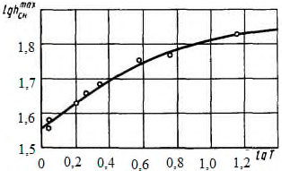
Пример 1
Проектируют дорогу III категории с шириной земляного полотна поверху В = 12,0 м. Трасса проложена в тундровом районе с объемом снегопереноса более 600 м³ /м по наветренному пологому склону косогора (крутизна 1:50). По данным ближайшей метеостанции, расположенной на местности с равнинным рельефом, высота снежного покрова в год изысканий 45 см, а с вероятностью превышения 5 % - 67 см.
Согласно исходным данным, район строительства характеризуется сильной метелево-ветровой деятельностью. Требуется определить высоту насыпи по условиям снегонезаносимости, которую вычисляют по формуле (Г.1).
Исходные параметры определяют следующим образом: Δ h = 0,6 м - для дороги III категории; h р.см = 0,67 м - с вероятностью превышения 5 %. Значение Кс может быть определено по таблице Г.2 (ввиду отсутствия данных снегомерной съемки на трассе): Кс = 0,8.
Высота снегонезаносимой насыпи
При отсутствии снегопереноса Δ h (из условия размещения снега на придорожной полосе) определяют по рисунку В.1 для дороги III категории:
При проектировании принимают большее значение высоты насыпи, т. е. h с.м = 1,15 м.
Пример 2
Расчет толщины снежного покрова с вероятностью превышения 5 %
В районе строительства автомобильной дороги устанавливают, по данным наблюдений ближайшей метеостанции в течение 10 лет, максимальную высоту снежного покрова h мах с.н. Например, значения h мах с.н колебались от 36 до 65 см. Во время изысканий дороги высота снежного покрова на станции равнялась 50 см.
Полученные значения располагают в убывающем порядке и вычисляют период эмпирической повторяемости Т э (таблица Г.3).
Таблица Г.3
| h мах | m | N +0,4 | m- 0,3 | T э |
|---|---|---|---|---|
| 65 | 1 | - | 0,7 | 14,9 |
| 61 | 2 | - | 1,7 | 6,1 |
| 55 | 3 | - | 2,7 | 3,9 |
| 50 | 4 | - | 3,7 | 2,8 |
| 48 | 5 | - | 4,7 | 2,2 |
| 45 | 6 | 10,4 | 5,7 | 1,8 |
| 43 | 7 | - | 6,7 | 1,6 |
| 40 | 8 | - | 7,7 | 1,4 |
| 39 | 9 | - | 8,7 | 1,2 |
| 36 | 10 | - | 9,7 | 1,1 |
На основании полученных данных h мах с.н и Т э строят в логарифмических координатах lg hсн мах - lgТэ эмпирическую кривую распределения максимальных высот снежного покрова (рисунок Г.2)
Рисунок В.2 Распределение максимальных высот снежного покрова
Принимая Т р = 20 лет (5 % обеспеченности), lg Т р = 1,3, по полученному графику путем экстраполяции устанавливают, что lg = 1,83, тогда толщина смежного покрова с вероятностью превышения 5 % будет равна 67,6 см.
ДПриложение Д. Расчет строительной осадки грунтов основания и тела насыпей
Д.1 В расчетах строительной осадки грунтов основания при сооружении насыпей следует учитывать время производства работ (лето, зима) и технологию возведения земляного полотна (на полную высоту или послойно).
Д.2 На тех участках, где земляное полотно запроектировано по 1-му принципу, насыпь возводят на полную высоту в зимний период на промерзших грунтах деятельного слоя, которые в летний период не оттаивают. Строительная осадка в таких случаях протекает в результате обжатия мерзлого мохорастительного покрова под весом насыпи. Величина обжатия (строительная осадка) S c = 0,5 h м.п , где h м.п -мощность (толщина) мохорастительного покрова, см.
Д.3 На тех участках, где земляное полотно запроектировано по 2-му принципу, насыпь возводят на полную высоту как в зимний, так и в летний период.
При зимней отсыпке строительную осадку S с определяют по следующим схемам:
- насыпь возводят на полную высоту из сыпучемерзлого песчаного или крупнообломочного грунта на промерзших грунтах деятельного слоя:
где S г.о - осадка грунтов основания в результате их оттаивания на расчетную глубину и уплотнения в пределах этой глубины под действием собственного веса, веса насыпи и подвижной нагрузки, см;
- насыпь возводят на полную высоту из сухо- и твердомерзлых грунтов, а также из талых песчаных или глинистых с комьями мерзлых грунтов на промерзших грунтах деятельного слоя:
где S т.н - осадка в результате оттаивания и уплотнения грунта в теле насыпи, см.
При летней отсыпке строительную осадку определяют по схеме послойного возведения насыпи на оттаивающих грунтах деятельного слоя. Общая осадка слагается из суммы осадок, протекающих при отсыпке каждого слоя и доведении насыпи до проектной отметки:
где S г.о1 , S г.о2 , S г.о3 , …, S г.оi -осадка грунтов основания соответственно при отсыпке 1-го, 2-го, 3-го и i -го слоев насыпи.
Д.4 Строительную осадку грунтов в теле насыпи на стадии проектирования вычисляют по формуле
где Нг - прогнозируемая глубина сезонного оттаивания грунта насыпи, см;
Ку - прогнозируемый минимальный коэффициент уплотнения сухо- или твердомерзлого грунта, принимаемый по таблице 10;
Кот - прогнозируемый минимальный коэффициент уплотнения после оттаивания сухо- или твердомерзлого грунта.
Строительную осадку тела насыпи на стадии строительства уточняют по формуле (Д.5).
Д.5 Строительную осадку грунтов основания при высоте насыпей до 2 м можно ориентировочно вычислять (на стадии рекогносцировочных изысканий) по формуле
где е - основание натурального логарифма; е = 2,72; bм -коэффициенты, учитывающие наличие или отсутствие мохорастительного покрова толщиной не более 20 см на поверхности основания; для участков трассы с ненарушенным мохорастительным покровом а м = 3,81, b м = 1,95, без мохорастительного покрова или с сильно нарушенным а м = 1,05, b м = 3,55;
W отн - естественная влажность грунта основания, доли влажности на границе текучести.
Д.6 Строительную осадку глинистых грунтов основания на стадии составления рабочих чертежей следует определять в зависимости от типа местности по формулам: для 1-го типа
где a о - коэффициент уплотнения грунтов основания ;
А о - коэффициент оттаивания грунтов основания ; h г.о - расчетная глубина оттаивания грунтов основания, см; р о - удельное давление на поверхность грунта основания (от подвижной нагрузки и веса насыпи); для автомобильных дорог р о = 0,0735 МПа, при использовании геотекстиля в нижней части насыпи р о = 0,049 МПа; γ - плотность грунта основания, кг/см³ ; e о -начальный коэффициент пористости грунта основания, доли единицы. для 2-го типа
Д.7 Строительную осадку торфяного грунта основания следует определять по формуле
где е - относительная осадка торфяного грунта основания при оттаивании под нагрузкой; устанавливают при инженерных изысканиях по ГОСТ 12248 и ГОСТ 23253.
Д.8 Строительную осадку оттаивающих грунтов основания при послойной отсыпке насыпи в летний период вычисляют по следующим формулам:
где А м.п , А г.о - коэффициент оттаивания соответственно мохорастительного покрова и грунта основания; а м.п , а г.о - коэффициент уплотнения соответственно мохорастительного покрова и грунта основания;
Р о - нагрузка на основание от веса уплотняющих средств и веса насыпи, МПа; h г.о1 , h г.о2 -толщина слоя грунта основания, оттаивающего соответственно при отсыпке второго и третьего слоев насыпи, см.
Учитывая, что влажность грунтов основания после уплотнения уменьшается, в расчетах по формулам (Д.10) и (Д.11) следует принимать А у м.п =0,7; А у г.о =0,8.
Давление на оттаивающие грунты основания вычисляют по формулам: а) от веса отсыпанного слоя насыпи и собственного веса оттаивающего грунта основания:
где γн - плотность грунта насыпи, кг/см³ ; h н - толщина (в уплотненном состоянии) отсыпанного слоя насыпи, см; γ м.н - плотность мохорастительного покрова (торфа), кг/м³ ; hм.п - толщина мохорастительного покрова, см; б) от уплотняющих средств:
где s - напряжения, возникающие в слое грунта от уплотняющих средств на расчетной глубине (принимают по таблице Д.1), Па;
Р п - давление в пневматических шинах уплотняющих средств, Па; ξ - коэффициент динамичности; ξ = 1,5.
Глубину оттаивания h г.о грунтов основания, увеличивающуюся по мере производства земляных работ, определяют непосредственными измерениями или ориентировочно вычисляют по формуле
где V г - скорость оттаивания грунта, см/сут; принимают по таблице Д.2;
Т от.г - время оттаивания слоя грунта, сут; принимают в зависимости от сроков отсыпки слоев земляного полотна.
Таблица Д.1
| Относительная глубина* y | Напряжение s, 10 4 Па | Относительная глубина* y | Напряжение s, 10 4 Па |
|---|---|---|---|
| 0 | 9,80 | 2,5 | 3,230 |
| 0,25 | 9,80 | 3,0 | 2,450 |
| 0,50 | 10,39 | 4,0 | 1,470 |
| 0,75 | 10,49 | 5,0 | 0,980 |
| 1,00 | 9,51 | 7,0 | 0,490 |
| 1,50 | 6,66 | 10,0 | 0,345 |
| 2,00 | 4,61 | 20,0 | 0,098 |
Таблица Д.2
| Грунт | Скорость оттаивания, см/сут, в дорожно-климатической подзоне | Скорость оттаивания, см/сут, в дорожно-климатической подзоне | Скорость оттаивания, см/сут, в дорожно-климатической подзоне |
|---|---|---|---|
| 1 1 | 1 2 | 1 3 | |
| Супесь | 3,0-4,3 | 3,5-4,8 | 5,7-7,2 |
| Суглинок | 2,3-3,4 | 2,9-4,3 | 4,4-6,8 |
| Глина | 1,4-3,0 | 2,4-4,0 | 2,8-5,2 |
Пример 1
На местности 2-го типа проектируют насыпь высотой 2 м с возведением на полную высоту в зимний период из крупнообломочного грунта. Естественное основание представлено глинистым грунтом влажностью 0,9 W т . Толщина слоя мохорастительного покрова - 15 см.
Требуется определить ориентировочную строительную осадку грунтов основания.
Вычисляют по формуле (Д.5):
При логарифмировании получаем
По таблицам десятичных логарифмов мантисса lg 3,31 = 0,5197, тогда lg S г.о = 0,5197+0,7627=1,2823.
По таблицам десятичных антилогарифмов находим S г.о = 19,2 см.
Пример 2
При тех же исходных данных, но при отсутствии мохорастительного покрова требуется определить строительную осадку грунтов основания.
Вычисляют по формуле (Д.5):
По таблицам десятичных антилогарифмов S г.o = 25,62 см.
Пример 3
На 1-м типе местности проектируют насыпь высотой 1 м с возведением в зимний период из сыпучемерзлого песка. Естественное основание представлено легкой супесью влажностью 0,65 W т .
Характеристики грунта основания, полученные по материалам изысканий: W ест = 15,8 %; g = 1,68 т/м³ ; W т = 24,6 %; e о = 0,83.
Согласно теплотехническому расчету глубина оттаивания грунта основания h г.о составит 2 м.
Требуется определить строительную осадку грунта основания.
Вычисляют по формуле (Д.6).
По приложению Б а о = 0,408 МПа -1 . Тогда
Пример 4
На местности 2-го типа проектируют насыпь высотой 2 м с возведением в зимний период на полную высоту из сыпучемерзлого песчаного грунта. Естественное основание представлено пылеватой глиной с влажностью 0,88 W т .
Характеристики грунта основания, полученные по материалам изысканий: W ест = 28,2%; g = 1,91 т/м³ ; e о = 1,04.
Согласно теплотехническому расчету глубина оттаивания грунта основания h г.о составит 1 м.
Требуется определить строительную осадку грунта основания, если в нижней части насыпи предусмотрен слой из геотекстиля.
Вычисляют по формуле (Д.7).
По приложению Б А о = 0,06, а о = 1,02 МПа -1 .
Тогда
Пример 5
На вечномерзлых торфяниках проектируют насыпь высотой 1,5 м с возведением на полную высоту в зимний период. Характеристики торфяника, полученные при изысканиях: W с = 6 %; g = 0,13 т/м³ .
Согласно теплотехническому расчету глубина оттаивания h г.о торфа составит 1 м.
Требуется определить строительную осадку торфяного грунта.
Вычисляют по формуле (Д.8).
Согласно данным таблицы 1 при W с = 6% и g = 0,13 т/м³ вычисляют при давлении насыпи 0,01 Мпа, е = 0,24:
ЕПриложение Е. Проектирование и строительство водопропускных труб
Е.1 При проектировании и строительстве водопропускных труб в зоне вечной мерзлоты необходимо руководствоваться СП 35.13330, СП 43.13330, а также требованиями, приведенными в [22].
Е.2 На дорогах I-V категорий предусматривают трубы капитального типа: бетонные, железобетонные и металлические гофрированные. Требования к материалам бетонных и железобетонных труб приведены в [21], а металлических гофрированных труб - в [22].
Е.3 Применение труб предусматривают преимущественно на периодически действующих водотоках. Металлические гофрированные трубы допускается использовать также на постоянных водотоках при отсутствии наледеобразования на дорогах III-V категорий.
Е.4 Отверстия труб рассчитывают по безнапорному режиму. Минимальное отверстие и высоту труб в свету назначают не менее 1,5 м.
Многоочковые трубы допускается проектировать с расположением очков в разных уровнях, размещая часть из них (как правило, одно) в уровне русла водотока, а остальные - на отметке выше уровня меженных вод. Количество рядом уложенных труб не ограничено.
Е.5 При проектировании водопропускных труб предусматривают использование грунтов в основаниях по следующим принципам:
- 1-й - обеспечить поднятие ВГММГ до подошвы фундамента и сохранять его на этом уровне в течение всего периода эксплуатации сооружения;
- 2-й - образовать талую прослойку между подошвой фундамента и ВГММГ;
- 3-й -использовать грунты основания в естественном талом состоянии.
Е.6 Трубы следует проектировать, как правило, исходя из условия наименьшего нарушения естественного состояния мерзлых грунтов.
Во всех случаях, когда это возможно, необходимо избегать устройства котлованов, приемных колодцев, глубоких бетонных, железобетонных и других экранов, различных врезов в мерзлых грунтах и предусматривать подготовку основания подсыпкой с ее планировкой.
Е.7 На водотоках, основание которых в пределах двойной мощности сезоннооттаивающего слоя представлено непросадочными грунтами, проектируют бесфундаментные трубы.
Е.8 На водотоках, характеризующихся наличием слоя просадочных при оттаивании грунтов мощностью не более 2 м, предпочтение отдают бесфундаментным трубам или трубам с фундаментами мелкого заложения при условии, что суммарная величина осадки грунтов основания может быть компенсирована величиной строительного подъема. При невыполнении этого условия предусматривают полную или частичную замену слабого грунта грунтовой подушкой из щебеночных, гравийных или гравийно-песчаных материалов, имеющих оптимальную или близкую к ней влажность.
Размеры грунтовых подушек для бетонных и железобетонных труб принимают следующие: а) длина на 1-1,5 м более общей длины трубы с оголовками; б) ширина не менее (2 √𝐻р 𝑑тр 3 / ) для одноочковой трубы и не менее (2 √𝐻р𝑑тр 2 +𝑑(𝑛 - 1) + 𝐵тр(𝑛-1) +1 ) для n -очковой трубы (где Н р - расчетная глубина оттаивания (промерзания) грунта под трубой, м; d тр -диаметр трубы, м; B тр -расстояние между трубами, м).
Е.9 На водотоках, характеризующихся наличием слоя сильнопросадочных и просадочных грунтов мощностью более 2 м, предусматривают свайные фундаменты. Массивные бетонные фундаменты допускают только при соответствующем обосновании при отсутствии подруслового стока.
Е.10 Минимальную глубину заложения фундаментов устанавливают в зависимости от расчетной глубины сезонного оттаивания грунтов основания Н р, их свойств (по CП 35.13330) и типа фундамента:
- свайного Н р +2 м, но не менее 3 м;
- массивного бетонного Н р, но не менее 1,5 м:
Н р = 𝐻г н m гК w где 𝐻г н -нормативная глубина сезонного оттаивания грунта, м; устанавливается по обязательному приложению Б; m г - коэффициент теплового влияния конструкций на грунт основания, принимаемый для фундамента: массивного бетонного - 0,8, свайного, с плитой на поверхности грунта - 1,0;
К w - поправочный коэффициент к нормативной глубине оттаивания грунта при его естественной влажности, устанавливаемой по обязательному приложению Б.
Е.11 При проектировании труб в l 1 ДКЗ применяют преимущественно 1-й принцип использования грунтов в основании, в l 2 - 2-й, на всей территории зоны вечной мерзлоты - 3-й с учетом Г.7.
Е.12 При использовании 1-го и 2-го принципов для уменьшения толщины грунтовой подушки предусматривают в основании теплоизолирующие слои по расчету.
Е.13 Трубы следует проектировать с входными и выходными оголовками. При низких насыпях могут быть предусмотрены многоочковые безнапорные трубы без выходных оголовков. Металлические гофрированные трубы допускается проектировать без устройства оголовков при соблюдении требований СП 35.13330.
В остальных случаях предпочтительнее применять воротниковые оголовки, а при необходимости, портальные и раструбные с небольшим заглублением (от 0,4 до 0,5 м) в грунты основания.
Е.14 На водотоках, основание которых в пределах двойной мощности сезоннооттаивающего слоя сложено непросадочными грунтами, конструкции укреплений подводящих и отводящих русел принимают в соответствии с типовыми решениями для обычных условий, исходя из гидравлических расчетов.
Е.15 На всех водотоках отводящее русло, как правило, должно быть устроено с уклоном не менее 2 %.
Тип укрепления подводящих и отводящих русел, сложенных просадочными грунтами, принимают в зависимости от их уклона: а) не более 1 % - бутовую кладку по слою теплоизоляции из мха, торфа толщиной не более 20 см в плотном состоянии; б) от 1 до 5 % - цементобетон (сборный или монолитный) по слою теплоизоляции из мха, торфа толщиной не более 30 см в плотном состоянии; в) более 5 % - быстротоки по слою теплоизоляции в соответствии с требованиями перечисления (б) .
Е.16 На водотоках, основание которых сложено сильнопросадочными грунтами, тип укрепления принимают в зависимости от уклона русел:
- не более 1 % - в соответствии с перечислением (б) Е.15;
- от 1 до 5 % - в соответствии с перечислением (в) Е.15;
- более 5 % - бетонные, металлические или деревянные лотки на сваях, заглубляемых в вечномерзлый грунт по расчету на выпучивание.
На местности с уклоном более 1 % отводящие русла целесообразно укреплять по всей длине косогора, устраивая у его подножия гасители энергии водного потока.
Е.17 Дополнительными мероприятиями, обеспечивающими устойчивость труб, являются:
- максимальное сохранение мохорастительного покрова на расстоянии не менее 20 м от концевых звеньев трубы и не менее 20 м в каждую сторону от нее;
- засыпка пазух в котлованах, подсыпка под фундаменты, устройство подготовок, под крепления русел водонепроницаемыми глинистыми грунтами;
СП 313.1325800.2017
- устройство насыпей с уположенными откосами или бермами на расстоянии, равном четырехкратной высоте насыпи в каждую сторону от трубы;
- устройство на откосах насыпи каменной наброски толщиной от 1 до 1,5 м выше уровня верха трубы на 1 м или торфяной изоляции толщиной не менее 1 м до уровня верха трубы, протяженность которых вдоль дороги равна четырем диаметрам трубы в каждую сторону от ее оси или оси крайних звеньев для многоочковых труб;
- засыпка понижений в районе трубы глинистым грунтом в виде бермы высотой от 0,2 до 0,3 м с уклоном ее верха от 2 % до 4 % в сторону русла водотока с целью предотвратить застой воды и увеличить скорость ее протекания вдоль подошвы насыпи;
- обеспечение в условиях большой снегозаносимости (в тех случаях, когда отверстие трубы полностью заносится снегом) проветривания труб в зимний период с помощью вентиляционных труб, концы которых выводят за пределы снежных отложений, или других устройств согласно [20].
Е.18 Строительство железобетонных труб осуществляют, руководствуясь указаниями СП 46.13330, а металлических гофрированных труб - указаниями [20].
Е.19 На водотоках, где предусмотрено сохранение грунтов основания в мерзлом состоянии, все виды строительно-монтажных работ выполняют в холодный период года. Кроме того, необходимо:
- строительную площадку организовывать с низовой стороны искусственного сооружения на расстоянии не менее 70 м от него;
- не допускать пересечения трассы построечными дорогами на расстоянии менее 50 м от оси сооружения;
- подъезды к местам строительства сооружения и стоянок механизмов устраивать на грунтовых подсыпках толщиной не менее 0,5 м.
Е.20 На водотоках, где допускается оттаивание грунтов основания, строительно-монтажные работы выполняют в любой период года.
При производстве работ в летнее время необходимо:
- располагать строительную площадку в соответствии с требованиями Е.19;
- отсыпать грунтовые площадки толщиной не менее 0,5 м под места стоянок механизмов и располагать их на расстоянии не менее 50 м от оси трубы;
- строить временные искусственные сооружения (деревянные, из металлических труб) для пропуска поверхностных вод.
Е.21 При производстве работ в летний период интервал между устройством котлована и закладкой фундамента или грунтовой подушки не должен превышать 24 ч.
Е.22 При бурении скважин и установке свай в мерзлых грунтах не допускается применение воды, пропаривание и другие способы предварительного оттаивания грунтов.
Подготовленную скважину закрывают щитом для предотвращения попадания в нее атмосферных осадков, грунта и случайных предметов.
Сваи устанавливают в скважины не позднее чем через 3 сут после окончания бурения.
Е.23 Сборные фундаменты устраивают так же, как и в обычных условиях. Швы между блоками заполняют цементопесчаным раствором с водоцементным отношением не более 0,5.
В зимнее время поверхность блоков перед заполнением швов прогревают горячим воздухом.
Е.24 Монолитные фундаменты и плиты свайных ростверков устраивают из жесткой смеси, приготавливаемой на быстротвердеющем цементе с пластифицирующими добавками.
В зимний период укладываемую смесь защищают от охлаждения и замерзания тепляками, обогреваемыми горячим воздухом, электричеством или паром.
СП 313.1325800.2017
Е.25 Пазухи между боковыми поверхностями котлована и фундамента засыпают суглинком или глиной оптимальной влажности слоями 20 см каждый и уплотняют до значений не менее 0,95 максимальной плотности. Категорически запрещается засыпать обводненные пазухи.
Е.26 При устройстве бесфундаментных труб на грунтовых подушках котлованы (траншеи) заполняют дренирующим грунтом слоями по 20-30 см и уплотняют механизмами виброударного и вибротрамбующего действия или катками.
Е.27 При монтаже железобетонных труб запрещается укладка звеньев труб «насухо». Во всех случаях должна быть предусмотрена подготовка из цементного раствора марки 150 с водоцементным отношением не выше 0,65 при глубине погружения конуса от 6 до 8 см.
Монтаж металлических гофрированных труб и устройство дополнительного защитного покрытия должны быть выполнены в соответствии с требованиями [17].
Е.28 Построенные и принятые (с составлением акта) железобетонные трубы засыпают грунтом одновременно с обеих сторон слоями толщиной от 15 до 20 см с уплотнением до требуемых значений. Толщина грунтового слоя над трубой должна быть не менее 1 м.
Засыпку металлических гофрированных труб следует выполнять в соответствии с [20].
Чтобы повысить несущую способность гофрированной трубы и надежность ее работы, рекомендуется до засыпки придать ее поперечному сечению овальность с большей осью по вертикали, увеличив вертикальный диаметр не более 3 % номинального, путем закрепления сечения стойками или путем устройства жесткого слоя засыпки согласно [20].
Е.29 На автомобильных дорогах III-V категорий в качестве водопропускных труб допускается применять некондиционные толстостенные металлические трубы с учетом положений [20].
Е.30 Материал для укрепления подводящих и отводящих русел (дерн, мох, торф, бутовый камень и бетонные плиты) заготавливают и завозят к месту строительства заблаговременно, а укрепительные работы проводят в весенний период до начала таяния грунта основания.
ЖПриложение Ж. Требования к геотекстильным материалам
Ж.1 При проектировании дорог в сложных мерзлотно-грунтовых условиях следует рассматривать варианты конструктивно-технологических решений с использованием геотекстильных материалов отечественного и зарубежного производства.
Ж.2 Сравнение вариантов необходимо проводить с учетом функции, выполняемой геотекстильным материалом:
- армирующих прослоек, усиливающих грунтовый массив, повышающих его устойчивость и уменьшающих деформации;
- разделяющих прослоек, исключающих перемешивание слоев различных по составу и состоянию грунтов, улучшающих условия работы слоев и конструкции в целом;
- дренирующих прослоек, обеспечивающих фильтрацию воды из основания или тела насыпи и ускоряющих ее осадку. Эту функцию могут выполнять только иглопробивные материалы, имеющие толщину не менее 3 мм;
- фильтра, задерживающего грунтовые частицы, перемещаемые потоком воды;
- покрытия, защищающего откосы от водной или ветровой эрозии.
Ж.3 Геосинтетические материалы в общем случае должны отвечать требованиям по следующим физико-механическим свойствам:
- поверхностная плотность;
- геометрические параметры (толщина и ширина полотна, размеры ячеек для георешеток и геосеток);
- прочность при растяжении;
- прочность при длительном статическом нагружении;
- деформативность;
- сопротивление местным повреждениям;
- водопроницаемость и фильтрующая способность (для геотекстиля и геокомпозитов на его основе);
- показатели климатического старения (долговечности) в составе дорожных конструкций.
Ж.4 Основные параметры геотекстильных материалов, используемых в дорожном строительстве, приведены в таблицах Ж.1 и Ж.2.
Ж.5 При выборе геосинтетического материала следует учитывать вид материала (грунта), отсыпаемого непосредственно на геосинтетический материал, и условия выполнения строительных работ.
Таблица Ж.1
| Показатели свойств геосинтетическог о материала | Армирование дорожных конструкций | Армирование дорожных конструкций | Армирование дорожных конструкций | Раздел ение на контак те грунто вых слоев | Защита гидрои золяци и | Эрозио нная защита поверх ности | Дренир ование | Гидро изоля ция |
|---|---|---|---|---|---|---|---|---|
| Показатели свойств геосинтетическог о материала | Дорог и катег орий I-II | Дороги категор ий III- IV | Дороги категор ии V, дороги времен ные | Раздел ение на контак те грунто вых слоев | Защита гидрои золяци и | Эрозио нная защита поверх ности | Дренир ование | Гидро изоля ция |
| 1 Прочность и деформативность при растяжении: - прочность при растяжении, кН/м, не менее | 40 | 30 | 20 | 5 | 10 | 5 | 5 | 20 |
| - деформация при максимальной нагрузке, %, не более | 20 | - | - | - | - | 30 | ||
| 2 Прочность при длительном статическом нагружении, %, не менее | 50 | - | - | - | - | 50 | ||
| 3 Сопротивление местным повреждениям (снижение прочности при укладке), %, не более | 10 | 20 | 15 | 10 |
| 4 Водопроницаемос ть (коэффициент фильтрации) в направлении, перпендикулярно м плоскости полотна, м/сут, не менее | 10 | 20 | 30 | - |
|---|---|---|---|---|
| 5 Фильтрующая способность (эффективный размер пор), мкм | 40-120 | 70-200 | 120- 200 | - |
| 6 Климатическое старение (долговечность) | Не менее срока службы дорожной конструкции | Не менее срока службы дорожной конструкции | Не менее срока службы дорожной конструкции | Не менее срока службы дорожной конструкции |
Таблица Ж.2
| Вид геоматериа ла | Номинальная прочность на разрыв при температуре 20 °С, кН/м, не менее | Номинальная прочность на разрыв при температуре 20 °С, кН/м, не менее | Долговременна прочность (120 лет при температуре 20 °С) на разрыв, кН/м | Долговременна прочность (120 лет при температуре 20 °С) на разрыв, кН/м | Относительное удлинение при разрыве,% | Относительное удлинение при разрыве,% | Нагрузка при 2 %удлинении, кН/м | Нагрузка при 2 %удлинении, кН/м | Нагрузка при 5 %-ном удлинении, кН/м | Нагрузка при 5 %-ном удлинении, кН/м | Поверх- ностная плотность, кг/м² |
|---|---|---|---|---|---|---|---|---|---|---|---|
| Вид геоматериа ла | вдоль полотна | поперек полотна | вдоль полотна | поперек полотна | вдоль полотна | поперек полотна | вдоль полотна | поперек полотна | вдоль полотна | поперек полотна | Поверх- ностная плотность, кг/м² |
| 50,0 | - | 22,7(-1,0) | - | 11,0(±3,0) | - | ≥12,7 | - | ≥24,7 | - | 0,30±0,03 | |
| 65,0 | - | 28,9(-1,3) | - | 11,0(±3,0) | - | ≥16,1 | - | ≥30,9 | - | 0,50±0,06 | |
| 90,0 | - | 37,8(-1,7) | - | 11,0(±3,0) | - | ≥23,7 | - | ≥45,2 | - | 0,55±0,06 | |
| 110,0 | - | 47,2(-2,2) | - | 11,0(±3,0) | - | ≥29,9 | - | ≥56,6 | - | 0,68±0,06 | |
| 130,0 | - | 59,6(-2,6) | - | 11,0(±3,0) | - | ≥38,0 | - | ≥75,5 | - | 0,80±0,07 | |
| 150,0 | - | 68,0(-3,0) | - | 11,0(±3,0) | - | ≥47,0 | - | ≥93,0 | - | 1,00±0,08 | |
| 170,0 | - | 71,4(-3,1) | - | 11,0(±3,0) | - | ≥52,5 | - | ≥103,0 | - | 1,20±0,08 | |
| 20,0 | 20,0 | 11,6(±2,5) | 10,7(±2,1) | ≥7 | ≥7 | ≥11 | ≥10,5 | 0,20±0,01 | |||
| 35 | 35 | 12,0(±3,0) | 12,0(±3,0) | ≥7 | ≥7 | ≥11 | ≥10,5 | 0,27±0,02 | |||
| 40 | 40 | 12,0(±3,0) | 12,0(±3,0) | ≥9 | ≥9 | ≥11 | ≥10,5 | 0,35±0,02 | |||
| 50 | 50 | 12,0(±3,0) | 12,0(±3,0) | ≥9 | ≥9 | ≥20 | ≥20 | 0,40±0,02 | |||
| 55 | 30 | 12,0(±3,0) | 12,0(±3,0) | ≥9 | ≥9 | ≥20 | ≥20 | 0,41±0,02 | |||
| 60 | 60 | 12,0(±3,0) | 12,0(±3,0) | ≥10 | ≥10 | ≥21 | ≥21 | 0,54±0,02 | |||
| 80 | 30 | 12,0(±3,0) | 12,0(±3,0) | ≥14 | ≥14 | ≥26 | ≥26 | 0,47±0,02 | |||
| 80 | 80 | 12,0(±3,0) | 12,0(±3,0) | ≥16 | ≥16 | ≥40 | ≥40 | 0,53±0,02 | |||
| 100 | 100 | 12,0(±3,0) | 12,0(±3,0) | ≥18 | ≥18 | ≥30 | ≥30 | 0,65±0,02 | |||
| 110 | 30 | 12,0(±3,0) | 12,0(±3,0) | ≥22 | ≥5 | ≥33 | ≥9 | 0,50±0,02 | |||
| 150 | 150 | 12,0(±3,0) | 12,0(±3,0) | ≥27 | ≥27 | ≥50 | ≥50 | 0,65±0,02 | |||
| 200 | 200 | 12,0(±3,0) | 12,0(±3,0) | ≥35 | ≥35 | ≥55 | ≥55 | 0,70±0,02 | |||
| Противоэр озионная георешетка (геомат) | 20 | 10 | - | - | 12,0(±3,0) | 12,0(±3,0) | - | - | - | - | 0,20±0,02 |
| Противоэр озионная георешетка (геомат) | 25 | 10 | - | - | 12,0(±3,0) | 12,0(±3,0) | - | - | - | - | 0,25±0,02 |
| Противоэр озионная георешетка (геомат) | 30 | 10 | - | - | 12,0(±3,0) | 12,0(±3,0) | - | - | - | - | 0,30±0,02 |
| Противоэр озионная георешетка (геомат) | 35 | 20 | - | - | 12,0(±3,0) | 12,0(±3,0) | - | - | - | - | 0,45±0,02 |
СП 313.1325800.2017 Таблица Ж.3
| Вид геоматериала | Прочность при растяжении в продольном/поперечном направлении, кН/м | Прочность при растяжении в продольном/поперечном направлении, кН/м | Относительное удлинение при максимальной нагрузке в продольном/поперечном направлении,% | Относительное удлинение при максимальной нагрузке в продольном/поперечном направлении,% | Прочность растяжения при 6 %удлинении (продольная), кН/м | Поверхностная плотность, кг/м² |
|---|---|---|---|---|---|---|
| Геополотно тканое | 40 | 40 | ≤10 | ≤20 | 25 | 0,10±0,02 |
| 80 | 80 | ≤10 | ≤20 | 50 | 0,32±0,02 | |
| 100 | 50 | ≤10 | ≤20 | 60 | 0,33±0,02 | |
| 100 | 100 | ≤10 | ≤20 | 60 | 0,35±0,02 | |
| 150 | 45 | ≤9 | ≤20 | 75 | 0,35±0,02 | |
| 150 | 150 | ≤10 | ≤20 | 75 | 0,50±0,02 | |
| 200 | 45 | ≤9 | ≤20 | 100 | 0,43±0,02 | |
| 200 | 200 | ≤10 | ≤20 | 100 | 0,68±0,02 | |
| 300 | 45 | ≤10 | ≤20 | 150 | 0,55±0,02 | |
| 300 | 100 | ≤10 | ≤20 | 150 | 0,68±0,02 | |
| 400 | 50 | ≤10 | ≤18 | 200 | 0,83±0,02 | |
| 400 | 100 | ≤10 | ≤18 | 200 | 0,90±0,02 | |
| 500 | 100 | ≤10 | ≤18 | 250 | 0,102±0,02 | |
| 600 | 50 | ≤10 | ≤18 | 300 | 0,115±0,02 | |
| 600 | 100 | ≤10 | ≤18 | 300 | 0,123±0,02 | |
| 800 | 50 | ≤10 | ≤18 | 400 | 0,135±0,02 | |
| 800 | 100 | ≤10 | ≤18 | 400 | 0,145±0,02 | |
| 1000 | 50 | ≤10 | ≤18 | 500 | 0,170±0,02 | |
| 1000 | 100 | ≤10 | ≤18 | 500 | 0,180±0,02 | |
| 1200 | 100 | ≤10 | ≤18 | 600 | 0,235±0,02 | |
| 1600 | 100 | ≤10 | ≤18 | 800 | 0,275±0,02 | |
| 2000 | 100 | ≤10 | ≤18 | 1000 | 0,330±0,02 |
Примечания
1 Одноосную георешетку рекомендуется использовать при армировании грунта подпорных стен, устоев мостов, крутых склонов, восстановление оползней.
- 2 Двухосную георешетку рекомендуется использовать для стабилизации и усиления грунтовых оснований, армирования грунтовых сооружений, усиления конструкций транспортных грунтовых сооружений и элементов из зернистых материалов.
- 3 Противоэрозионная георешетка (геомат) предназначена для защиты грунтовых откосов от поверхностной почвенной эрозии и создания прочного дернового покрытия на поверхности грунтовых сооружений.
4 Геополотно тканое используется для разделения слоев, выполняет функции фильтрации и усиления слабого грунта, а также для укрепления откосов и склонов с высоким углом заложения.
СП 313.1325800.2017
Библиография
- [1] Федеральный закон Российской Федерации от 27 декабря 2002 г. № 184-ФЗ «О техническом регулировании»
- [2] Федеральный закон Российской Федерации от 22 июня 2008 г. № 123-ФЗ «Технический регламент о требованиях пожарной безопасности»
- [3] Федеральный закон Российской Федерации от 30 декабря 2009 г. № 384-ФЗ «Технический регламент о безопасности зданий и сооружений»
- [4] Федеральный закон Российской Федерации от 8 ноября 2007 г. № 257-ФЗ «Об автомобильных дорогах и о дорожной деятельности в Российской Федерации и о внесении изменений в отдельные законодательные акты Российской Федерации»
- [5] Федеральный закон Российской Федерации от 04 декабря 2006 г. № 200-ФЗ «Лесной кодекс»
- [6] Федеральный закон Российской Федерации от 3 июня 2006 г. № 74-ФЗ «Водный кодекс Российской Федерации» (ред. от 28.11.2015)
- [7] Федеральный закон Российской Федерации от 10 января 2002 г. № 7-ФЗ «Об охране окружающей среды»
- [8] Федеральный закон Российской Федерации от 25 октября 2001 г. № 137-ФЗ «Земельный кодекс»
- [9] Федеральный закон Российской Федерации от 25 июня 2002 г. № 73-ФЗ «Об объектах культурного наследия (памятниках истории и культуры) народов Российской Федерации»
- [10] Федеральный закон РФ от 14 марта 1995 г. № 33-ФЗ «Об особо охраняемых природных территориях»
- [11] Постановление Правительства Российской Федерации от 28 сентября 2009 г. № 767 «О классификации автомобильных дорог в Российской Федерации»
- [12] СП 11-102-97 «Инженерно-экологические изыскания для строительства»
- [13] СП 11-104-97 «Инженерно-геодезические изыскания для строительства. Часть III. Инженерно-гидрографические работы при инженерных изысканиях для строительства»
- [14] СП 11-105-97 «Инженерно-геологические изыскания для строительства. Часть IV. Правила производства работ в районах распространения многолетнемерзлых грунтов»
- [15] СП 33-101-2003 «Определение основных расчетных гидрологических характеристик»
- [16] ВСН 84-89 «Изыскания, проектирование и строительство автомобильных дорог в районах распространения вечной мерзлоты»/ - М.: Минтрансстрой, 1990
- [17] ВСН 176-78 «Инструкция по проектированию и постройке металлических гофрированных водопропускных труб». - М.: Минтрансстрой и МПС, 1985
- [18] ОДМ 218.046-01 «Проектирование нежестких дорожных одежд». - М., Минтранс РФ, 2002
- [19] СТО 90903792.001-2015 Материал «ДиатомИК». Теплоизоляционный гранулированный. Технические условия. - Тюмень, 2015
- [20] ОДМ 218.5.003-2010 «Рекомендации по применению геосинтетических материалов при строительстве и ремонте автомобильных дорог»: - М.. Росавтодор, 2010
- [21] ВСН 155-69 «Указания по проектированию и строительству железобетонных и бетонных конструкций автодорожных и городских мостов и труб, предназначенных для эксплуатации в условиях низких температур (северное исполнение)» - М.: Минтрансстрой, 1969
- [22] ОДМ 218.2.001-2009 «Рекомендации по проектированию и строительству водопропускных сооружений из металлических гофрированных структур на автомобильных дорогах общего пользования с учетом региональных условий (дорожно-климатических зон)».
- [23] ГН 2.2.5.1313-03 Предельно допустимые концентрации (ПДК) вредных веществ в воздухе рабочей зоны
- [24] «Руководство по операционному контролю качества строительномонтажных работ при сооружении линейной части магистральных трубопроводов» Р375-79. ВНИИСТ. - М.,1980
- [25] СН 467-74 «Нормы отвода земель для автомобильных дорог» М.: Госстрой, 1974
- [26] ВСН 210-91 «Проектирование, строительство и эксплуатация противоналедных сооружений и устройств». - М.: Минтрансстрой, 1991 МКС 93.080.01 Ключевые слова: изыскания в районах вечномерзлых грунтов, проектирование земляного полотна и дорожных одежд в районах вечномерзлых грунтов, строительство земляного полотна и дорожных одежд в районах вечномерзлых грунтов, проектирование и строительство искусственных сооружений в районах вечномерзлых грунтов, охрана окружающей среды Организация-разработчик Исполнительный директор Руководитель разработки Зам. директора Начальник отдела комплексных исследований, стандартизации и логистического сопровождения проектов А.Ю. Эглескалн Л.А. Андреева И.П. Потапов